Roam이 뭐고 왜 React Native·Expo인가
이 강의가 만드는 앱 Roam의 핵심 기능은 한 문장 검색이에요. "숲속의 조용한 오두막, 온수 욕조와 벽난로, 개 동반, 2인 1박 300달러 이하"라고 쓰면 필터 화면을 하나도 건드리지 않고 숙소가 나와요. 발표자는 이 기능이 에어비앤비에도 없다고 소개해요.
아래 화면이 그 문장을 어떻게 나누는지 보여 줘요. 왼쪽 Quiet·Woods는 느낌이고, 오른쪽 Cabin·Hot tub·Dog·2 guests와 왼쪽 아래 Under $300은 맞거나 틀리는 조건이에요. 이 두 종류를 다르게 처리하는 게 강의 후반부 전체의 주제예요.
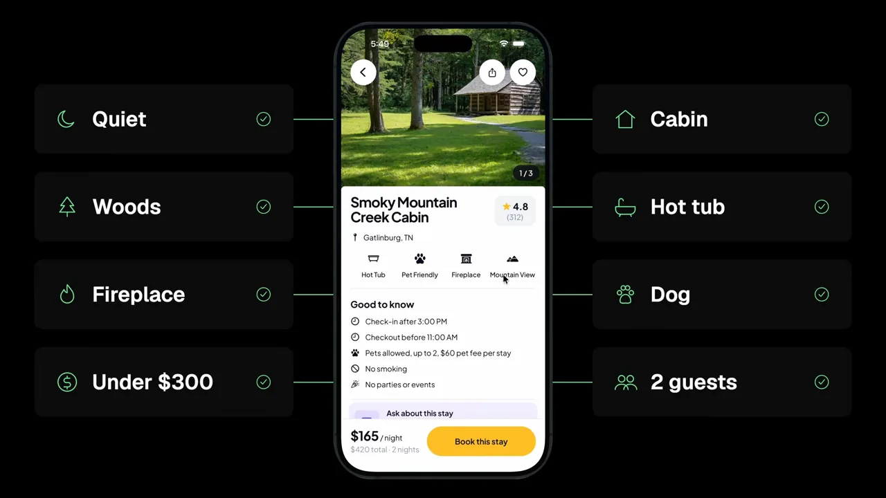
두 번째 기능은 숙소에 대한 질문이에요. "고양이 데려가도 돼요?"라고 물으면 답 카드 세 장(고양이 환영, 최대 2마리, 25달러 요금) 아래에 각각 근거 문서 이름(pets-policy.md, house-rules.md, pricing.md)이 붙어요. 화면 위 탭 이름처럼 근거가 있는 답(grounded answers)이 목표예요.
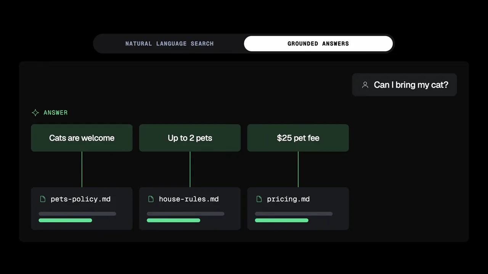
발표자는 이 앱보다 만드는 과정을 가르치는 게 목적이라고 말해요. 아래 그림에서 위쪽 다섯 칸(Roam, 스타트업 앱, 외주 프로젝트, 마켓플레이스, SaaS)이 모두 같은 아래 줄 흐름 Idea → Plan → Build → Connect → Ship을 거쳐요.
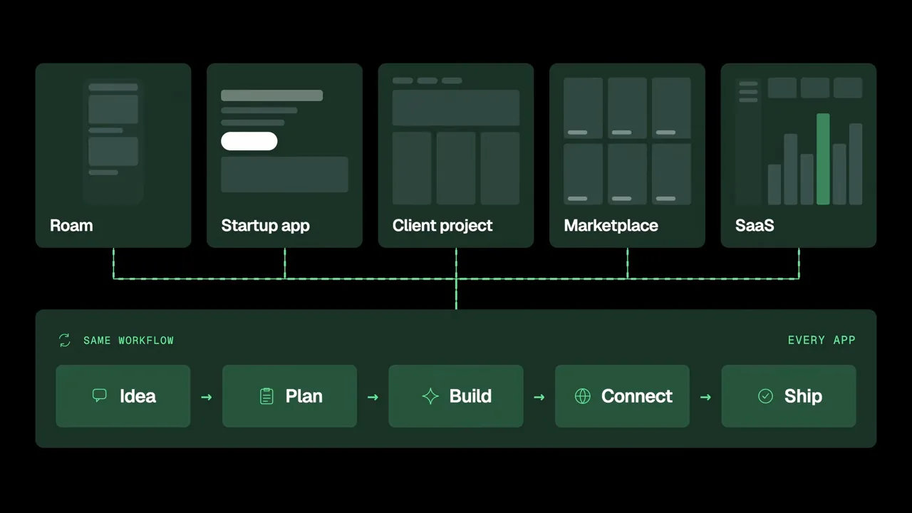
React Native와 Expo가 하는 일
React Native 이전에는 iOS(Swift)와 안드로이드(Kotlin) 코드를 따로 유지해야 했어요. React Native는 자바스크립트와 React로 쓴 코드 하나로 양쪽의 진짜 네이티브 UI(User Interface)를 그려요. 웹뷰로 감싼 하이브리드 앱이 아니에요. 예전 약점이던 성능은 새 아키텍처가 기본이 되면서 달라졌다고 해요. 옛 브리지를 걷어 내고 JSI(JavaScript Interface)로 네이티브 코드와 직접 통신하고, 모듈은 필요할 때 불러와요.
Expo는 React Native 위에 얹는 프레임워크예요. 발표자는 Next.js와 React의 관계에 빗대고 "React Native는 엔진, Expo는 자동차"라고 해요. Expo를 쓰는 이유로 네 가지를 들어요. Android Studio나 Xcode 없이 시작할 수 있고, 카메라·알림 같은 네이티브 기능이 미리 준비돼 있고, 파일 기반 라우팅을 쓰고, EAS(Expo Application Services)로 빌드·스토어 제출·무심사 업데이트까지 이어져요.
웹 React와 다른 점
문법은 같은 JSX(JavaScript XML)인데 태그가 달라요. 아래 슬라이드 왼쪽 ReactJS 칸의 <div>·<p>가 오른쪽 React Native 칸에서는 <View>·<Text>로 바뀌어요. 두 칸을 잇는 'SAME SYNTAX' 라벨이 요점이에요.
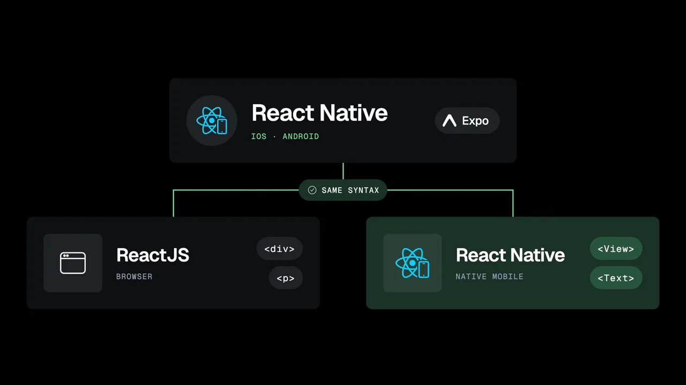
강의가 짚는 컴포넌트를 표로 모으면 이래요.
| 컴포넌트 | 하는 일 | 웹에서 비슷한 것 |
|---|---|---|
View | 다른 컴포넌트를 담는 상자. 기본이 flexbox 레이아웃 | div |
Text | 글자는 반드시 이 안에 써요 | p, h1 |
TouchableOpacity | 누르면 반응하는 버튼. onClick 대신 onPress | button |
FlatList | 긴 목록을 부드럽게 스크롤. data와 renderItem을 받아요 | map() |
ScrollView | 짧은 내용을 스크롤 가능한 상자에 담기 | overflow: scroll |
Image / ImageBackground | 이미지 표시 / 위에 다른 요소를 얹는 배경 이미지. SVG(Scalable Vector Graphics)는 안 돼요 | img |
Modal, Alert, Switch | 모달 창, 경고창, 토글 | — |
짧은 목록은 map으로 충분하고, 길고 스크롤이 많은 목록에만 FlatList를 써요. 화면 가장자리 처리도 웹에는 없는 고민이에요. 아래 그림의 노치, 상태 바, 홈 인디케이터에 내용이 가려지지 않게 하려고 기본 SafeAreaView 대신 react-native-safe-area-context 패키지를 쓴다고 해요. 모든 기기와 하단 바까지 처리해 주기 때문이에요.
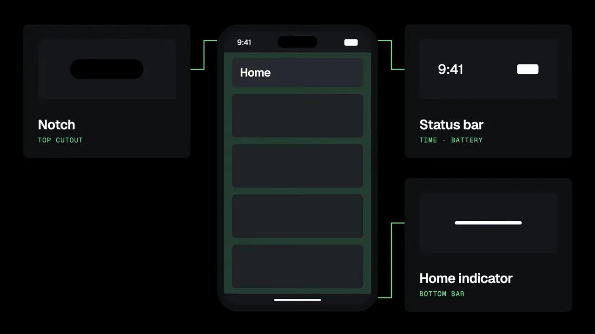
에이전트에게 일하는 규칙 주기: AGENTS.md와 6단계
프로젝트는 npx create-expo-app@latest로 만들어요. 기본 템플릿은 TypeScript와 Expo Router가 이미 설정돼 있어요. npx expo start를 하면 Metro 번들러가 뜨고 QR(Quick Response) 코드가 나와요. 휴대폰의 Expo Go 앱으로 찍으면 별도 빌드 없이 실기기에서 돌아가고, 코드를 저장할 때마다 바로 반영돼요.
- 휴대폰과 컴퓨터가 같은 네트워크에 있나요? iOS에서 연결이 안 되면 VPN(Virtual Private Network)이 꺼져 있는지 봐요.
- 컴퓨터에서
npx expo login을 하고, 휴대폰의 Expo Go도 같은 계정으로 로그인했나요? - 예제 파일이 필요 없으면
npm run reset-project로 지워요.
보일러플레이트가 낯설면 아무 AI 도구에나 파일 구조를 설명해 달라고 하면 된다고 해요. 발표자는 VS Code의 Claude Code 확장을 쓰지만, 강의 내용은 어떤 에이전트로도 따라 할 수 있어요.
규칙 없이 맡기면 생기는 일
발표자는 빈 세션에 "임대 앱 홈 화면을 만들어 줘"라고 보내고 잠시 뒤 멈춰요. 에이전트는 프로젝트 설정을 뒤져도 아무 결정을 찾지 못하자 색, 컴포넌트, 폰트, 파일 이름을 스스로 정하기 시작했어요. 이런 결정은 사람이 해야 하고, 새 세션에서도 다시 읽을 수 있는 곳에 있어야 해요. 그곳이 AGENTS.md예요.
Expo가 만들어 준 AGENTS.md에는 이미 쓸 만한 규칙이 있어요. 아래 화면 제목처럼 "Expo는 바뀌었다, 학습 데이터를 믿지 마라"예요. 그 아래 세 줄이 방법이에요. package.json에서 Expo 메이저 버전을 확인하고, 그 버전의 문서를 읽고, 그 밖의 것은 docs.expo.dev/llms.txt를 보라고 해요.
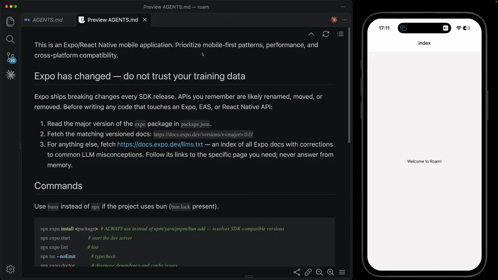
Expo 기본 파일에는 명령어, 라우팅, EAS 안내, 그리고 이유를 알기 전에는 ios·android 폴더를 손대지 말라는 규칙도 있어요. 같이 생성된 .claude/settings.json은 공식 Expo 플러그인을 켜 줘요. 저장소에 들어 있어서 클론하는 사람 모두 같은 설정을 받아요.
Roam만의 규칙을 더하기
발표자는 준비해 둔 AGENTS.md를 붙여 넣지만, 직접 만드는 법을 더 강조해요. 앱이 하는 일, 고른 도구, 절대 안 되는 일을 거친 메모로 적고 에이전트에게 정리시켜요. 이때 "코드를 읽어서 알 수 있는 건 빼고, 모호하면 먼저 물어보라"고 덧붙여요. 그리고 결과를 꼭 읽어요.
아래 슬라이드가 그 검토 장면이에요. 1, 3, 6번(인증은 Clerk, 숙소 콘텐츠는 Sanity에서만, 책임을 옮기기 전에 묻기)은 이 프로젝트만의 결정이라 남길 줄이에요. 2·4번처럼 어디에나 해당하는 말은 지울 후보이고, 5번 'Auth tokens are stored in Firebase'는 인증을 Clerk가 맡는다는 1번과 부딪혀요.
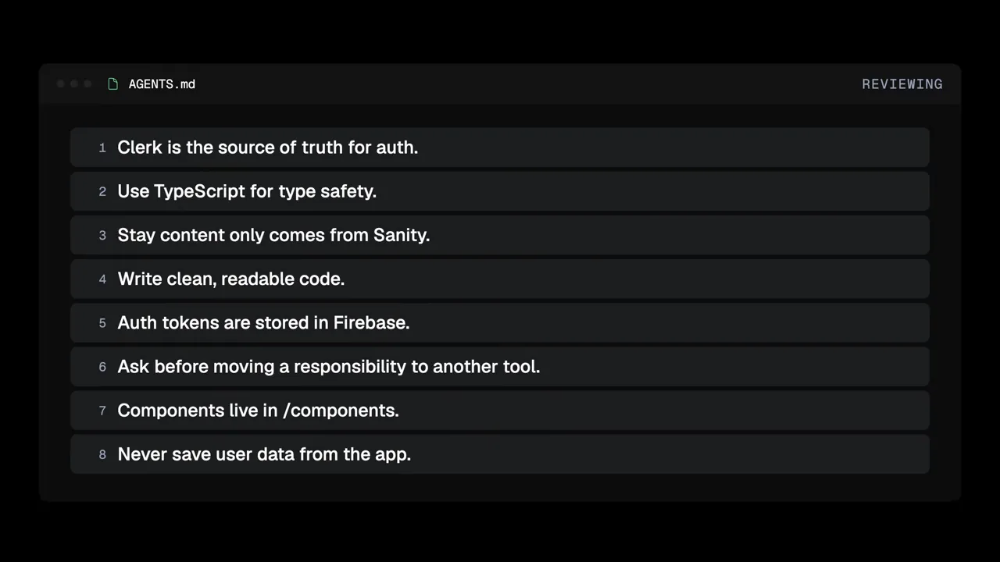
Roam의 AGENTS.md는 이런 절로 이뤄져요.
| 절 | 담는 것 |
|---|---|
| Who owns what | 도구마다 한 가지 일. 인증은 Clerk, 콘텐츠는 Sanity, 분석은 PostHog. 책임을 옮기려면 먼저 물어요. 발표자는 이 절이 가장 중요하다고 해요 |
| Rules | 비밀 키는 앱에 넣지 않기, 의존성 추가·데이터 삭제·큰 구조 변경 전에 묻기 |
| How we build | 아래의 6단계 흐름 |
| Building from designs | 디자인을 받으면 다시 디자인하지 말고 레이아웃·아이콘·폰트·크기·색을 맞추기 |
| Reporting, Checks | 무엇을 만들고 무엇을 검증했는지 보고하는 방식 |
파일은 짧게 유지해요. 불필요한 내용이 많을수록 중요한 규칙이 묻혀요. Claude Code의 /doctor prompt-audit로 낡거나 충돌하는 규칙을 찾을 수 있다고 해요.
모든 기능이 밟는 6단계
이후 강의의 모든 기능은 같은 순서로 만들어요. 영상은 AGENTS.md의 'How we build features' 절을 읽으며 설명하는데, 한눈에 보이도록 그림으로 옮겼어요. 노란 칸은 에이전트가, 점선 테두리를 두른 파란 칸(4단계)은 사람이 움직이는 칸이에요.
아래는 AGENTS.md에서 4단계 문장에 형광 표시를 한 장면이에요. "IMPORTANT: stop and wait. 사용자가 계획을 승인하기 전에는 앱 코드를 쓰지 마라. 질문 패널로 승인을 받아라"라는 내용이에요. 6단계(Close out)는 검증, 보고서 작성, 오래갈 결정을 AGENTS.md에 반영하는 일이에요.
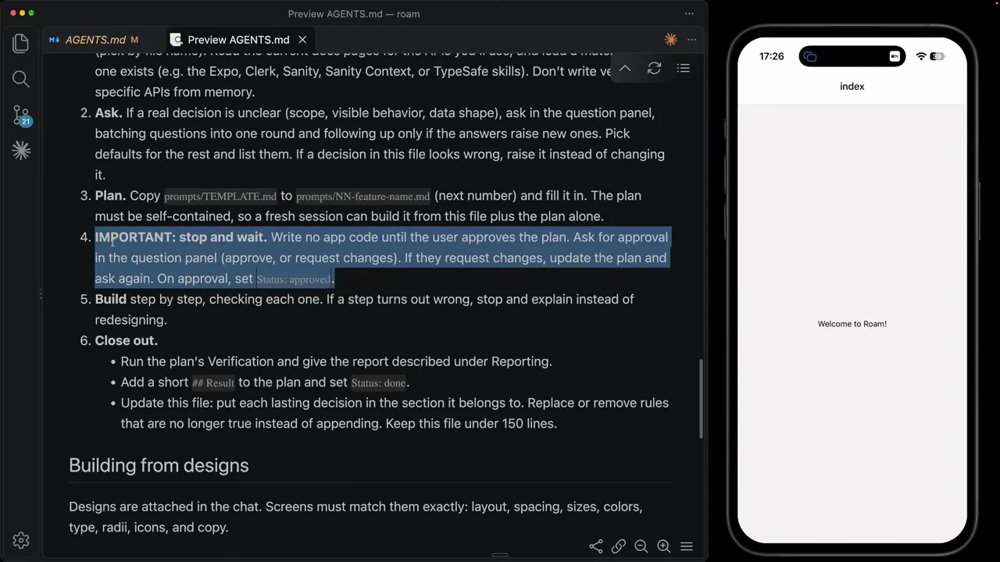
계획서는 prompts/ 폴더에 기능마다 하나씩, TEMPLATE.md를 복사해 만들어요. 아래 미리보기에 보이는 항목이 목표 아래로 이어지는 Decisions, Out of scope, Steps, Verification, AGENTS.md updates예요. 'Out of scope'가 있는 이유는 에이전트가 도와주려는 마음에 요청보다 많이 만들기 때문이에요.
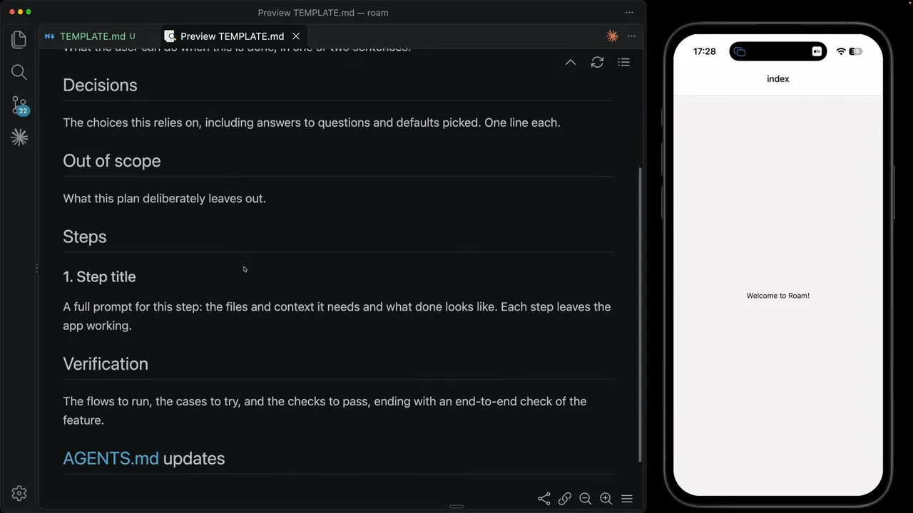
AGENTS.md와 계획서 하나만 읽고도 무엇을 만들지 알 수 있을 만큼 써요. 영상 43:25에서 보기둘의 역할 차이를 발표자는 이렇게 정리해요. AGENTS.md는 지금도 참인 프로젝트 사실, 계획서는 기능 하나를 어떻게 만들었는지의 기록이에요.
마지막으로 에이전트 스킬을 설치해요. npx skills add expo/skills를 실행하고 애니메이션, 데이터 페칭, 디자인 시스템, 프로젝트 구조, 라우터만 골라요. 발표자는 스킬을 모아 두려고 깔지 말고 필요할 때 필요한 것만 깔라고 해요. 같은 이유로, 도구가 계속 바뀌니 버전에 의존하는 코드는 늘 현재 문서를 읽고 쓰게 해요.
디자인 시스템부터 만들기
화면 10개를 따로 만들면 어느 화면의 버튼은 이 노란색, 몇 화면 뒤에는 살짝 다른 노란색이 돼요. 제목은 22px였다가 24px이 되고요. 동작은 하지만 앱이 어수선해 보여요. 에이전트는 프롬프트마다 새 값을 지어낼 기회가 생기니 이 문제가 더 쉽게 생겨요.
그래서 아래 그림처럼 위쪽 네 칸(Colors, Typography, Spacing, Reusable styles)을 한 번 정하고, 아래 다섯 화면(Explore, Stay, Saved, Chat, Profile)이 모두 같은 'Pet Friendly' 칩과 'Book this stay' 버튼을 가져다 써요.
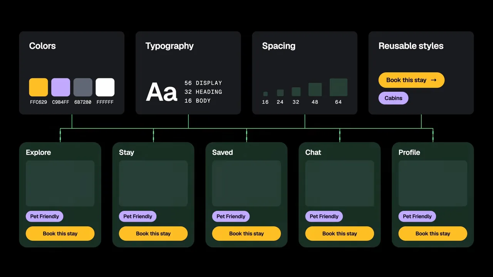
NativeWind v5를 문서로 설치시키기
React Native에서는 보통 StyleSheet 객체를 만들고 컴포넌트에서 참조해요. NativeWind는 Tailwind처럼 p-4, text-xl 같은 클래스를 요소에 바로 붙이게 해 줘요. 스타일이 UI 가까이 있으니 사람도 에이전트도 읽고 고치기 쉬워요. 또 색 같은 디자인 토큰을 한 곳에 정의해 두고 이름으로 재사용할 수 있어요.
발표자는 설치 단계를 일일이 설명하지 않고, NativeWind가 에이전트용으로 공개한 llms-full.txt 주소를 붙여 "이 문서대로 NativeWind v5를 설정해"라고만 지시해요. v5는 아직 정식 출시 전이라 설정이 예전 버전과 다르고, 에이전트가 옛 방식을 기억하고 있을 수 있기 때문이에요. 에이전트는 계획서를 쓰고 멈췄다가, 승인 뒤 react-native-css, Tailwind, PostCSS 설정, global.css, Metro 설정을 처리했어요.
디자인 참조 이미지를 토큰과 컴포넌트로
다음으로 Roam 디자인 참조 이미지를 줘요. 아래 시트에는 로고, 색 팔레트, 타이포그래피, 버튼, 입력창, 필터 칩, 숙소 카드, 정책 카드, 하단 내비게이션, 아이콘, 토글까지 부품만 있어요. 홈이나 검색 같은 완성 화면은 일부러 없어요. 화면은 나중에 이 부품으로 조립해요.
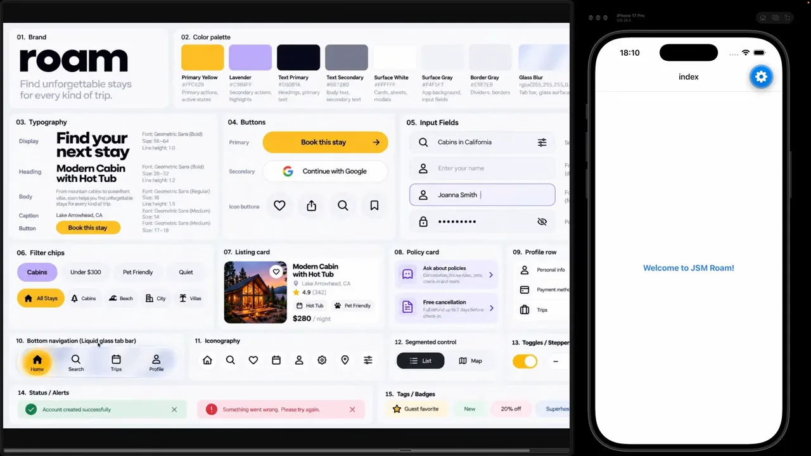
프롬프트에는 이미지와 함께 @.agents/skills/expo-design-system을 붙여요. 이 스킬은 반복되는 값은 토큰으로, 재사용 UI는 컴포넌트로, 화면은 컴포넌트만 쓰게 구조를 잡도록 안내해요. 이미 있는 스타일 시스템 옆에 두 번째 시스템을 만들지 않게 먼저 프로젝트를 살피게도 해요.
에이전트는 계획 전에 네 가지를 물었어요. 발표자의 답은 이래요.
| 에이전트의 질문 | 발표자의 답 |
|---|---|
| 시트에는 '기하학적 산세리프'라고만 있는데 어떤 폰트? | Plus Jakarta Sans |
| 아이콘 라이브러리는? | Lucide React Native |
| 범위는 토큰과 핵심 부품만? | 시트의 15개 섹션 전부. 처음엔 오래 걸려도 이후 일관성이 좋아져요 |
| 다크 모드도? | 라이트 모드만 |
계획서의 색 표를 보면 토큰 이름이 생김새가 아니라 용도를 말해요. 아래 화면의 Use 열처럼 #FFC829는 '주요 동작, 활성 상태, 별점'에 쓰는 primary예요. 'est.' 표시는 이미지에서 추정한 값이라는 뜻이에요. 이름이 용도면 나중에 주 색을 바꿔도 이름은 그대로 둘 수 있어요.
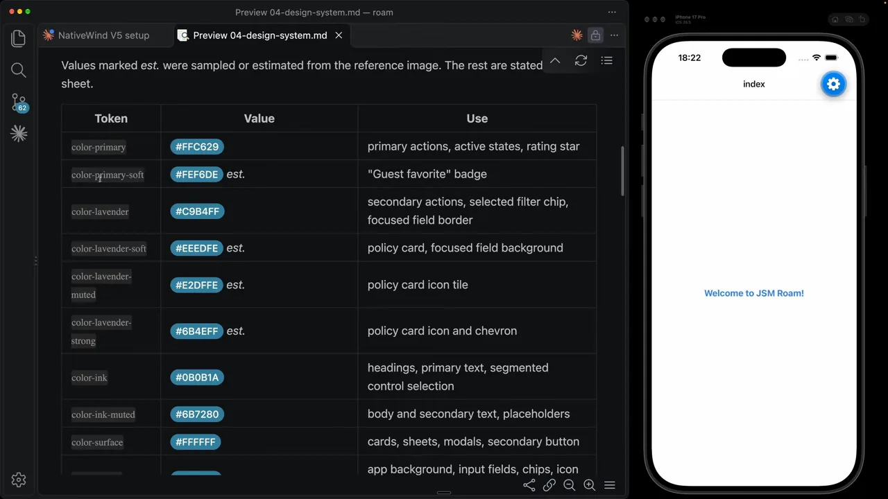
결과는 토큰, Jakarta 폰트, Lucide 아이콘, 15개 섹션을 덮는 컴포넌트 14개, 그리고 개발용 갤러리 화면이에요. 빠진 Roam 워드마크는 따로 생성하게 했어요. 보고서에는 줄 높이처럼 시트와 다르게 처리한 점(NativeWind가 줄 높이를 배수로 다뤄서 비율로 바꿈)도 적혀 있어요. 마지막 'AGENTS.md updates' 덕분에 토큰은 global.css에만, 재사용 UI는 src/components에, 아이콘은 Lucide, 앱은 라이트 전용이라는 규칙이 파일에 남아요. 발표자는 프로젝트에서 16진수 색을 검색해 토큰 파일 밖에 없는지 확인하면 어긋남을 일찍 잡는다고 해요.
화면 먼저, 서비스는 나중: 온보딩·인증·홈
디자인 시스템이 생기자 프롬프트가 짧아져요. 온보딩은 아래 디자인 이미지를 붙이고 "디자인에 가깝게 만들고, 인증 흐름으로 넘어가게 연결하고, Unsplash 이미지를 써"라고만 해요. Unsplash를 지정하는 이유는 에이전트가 저작권 문제 없이 쓸 수 있는 이미지를 찾게 하려는 거예요.
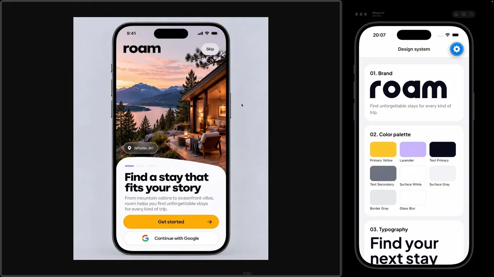
에이전트의 질문은 이랬어요. Clerk가 아직 없는데 'Get started'는 어디로 가나(→ 임시 인증 화면), 슬라이드는 몇 장인가(→ 스와이프 3장, 내용은 알아서), 건너뛰기는 어디로(→ 로그인), 온보딩은 처음 한 번만인가(→ 로그인하지 않은 동안 계속). 발표자는 이런 질문 덕분에 에이전트가 엇나가지 않는다고 말해요. 그리고 결과를 눌러 보기 전에 보고서부터 읽으라고 거듭 당부해요. 무엇이 바뀌었고 무엇을 검증했고 내가 무엇을 테스트해야 하는지가 거기 있어요.
인증은 가짜로 먼저
회원가입, 이메일 인증, 로그인 화면은 일부러 가짜(mock) 인증으로 먼저 만들어요. 화면과 외부 서비스를 동시에 붙이면, 고장 났을 때 볼 곳이 두 군데가 돼요. 디자인은 회원가입 화면 하나만 줬고, 나머지 두 화면은 에이전트가 그 스타일을 이어받아 만들었어요. 아래 계획서의 Goal이 범위를 정리해요. 이름·이메일·비밀번호로 가입하고, 6자리 이메일 코드로 확인하고, 구글·애플로도 들어갈 수 있게 하되, 인증은 나중에 Clerk가 바꿔 끼울 인터페이스 하나 뒤에 가짜로 둬요.
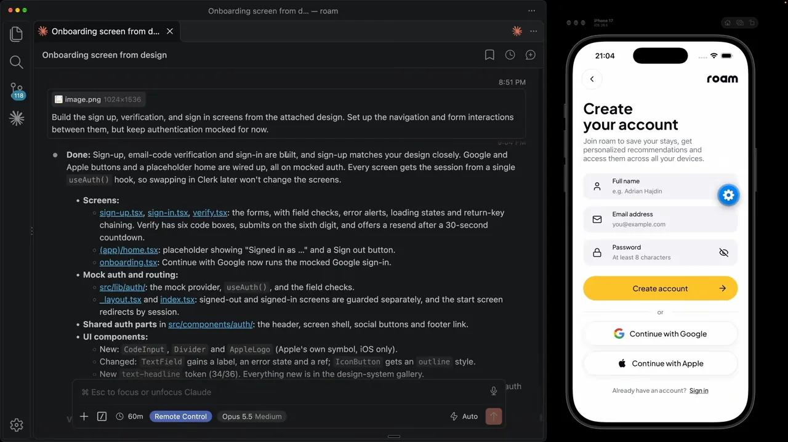
보고서의 '직접 테스트' 목록대로 빈 폼 제출, 이미 쓰인 이메일, 정상 가입, 인증 코드 화면의 카운트다운, 로그아웃, 구글 로그인까지 눌러 봤어요. 검증, 로딩, 에러 상태가 다 들어 있었어요.
Clerk로 진짜 인증 붙이기
Clerk는 에이전트가 쓰기 좋은 세 가지를 줘요. 아래 공식 문서 화면 위쪽이 스킬(npx skills add clerk/skills), 아래쪽이 CLI(npx clerk@latest init)예요. 여기에 Clerk MCP(Model Context Protocol) 서버가 더해져요. 스킬은 Clerk를 제대로 쓰는 법을 가르치고, CLI는 프로젝트를 감지해 맞는 패키지를 깔고 계정과 연결하고, MCP 서버는 최신 SDK(Software Development Kit) 예시와 계정 데이터에 직접 닿게 해 줘요.
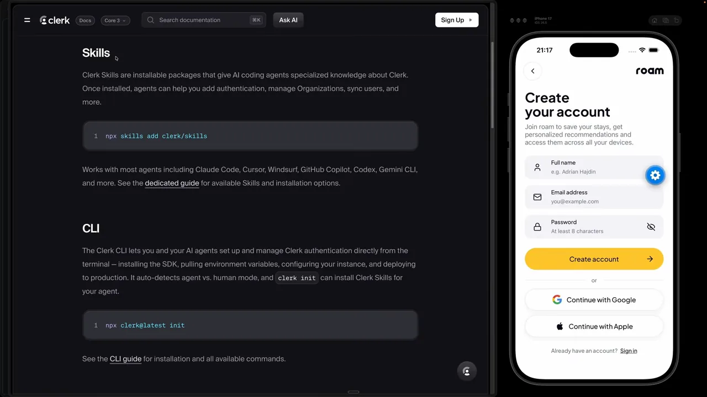
CLI가 만든 .env.local에는 키가 두 개 있어요. EXPO_PUBLIC_이 붙은 퍼블리셔블 키는 앱이 어느 Clerk 앱에 속하는지 알려 주는 공개값이에요. 시크릿 키는 계정 권한이 있어서 앱에 절대 들어가면 안 되고, 그래서 접두사가 없어요.
그다음 프롬프트는 "Clerk MCP를 설치해 쓰고, 목 인증을 Clerk로 바꾸되 우리 화면은 유지해. 인증 코드가 있는 이메일 가입·로그인, 세션 유지, 보호된 라우트, 로그아웃을 구현해"예요. Clerk에는 기성 UI도 있지만, 로직만 쓰고 화면은 우리 것을 쓰겠다는 뜻이에요. 에이전트는 세 가지를 물었어요. Clerk 인스턴스에 이름 필드가 꺼져 있는데 켤까(→ 켬, CLI로 자동), Clerk 기본 최소 비밀번호는 15자인데 화면은 8자(→ 8자), 구글·애플 버튼은(→ 구글도 함께 연결). 결과는 기존 useAuth 훅 뒤에서 Clerk를 부르고, Clerk 에러 코드를 Roam 문구로 바꿔 보여 줘요.
직접 가입해 보니 쉬운 비밀번호에는 '데이터 유출에 나온 비밀번호'라는 Clerk 경고가 떴어요. 사용자가 실제로 생겼는지는 대시보드 대신 Clerk MCP의 list_users 도구로 에이전트에게 물어 확인했어요.
모르는 부분은 에이전트에게 설명을 시키라고 해요. 아래는 "인증을 처음 배우는 사람에게 설명하듯 알려 줘"에 대한 답이에요. 'Four ideas first' 아래 네 줄이 핵심이에요. 계정은 Clerk 데이터베이스의 레코드, 인증(verification)은 이메일 소유 증명, 세션은 '로그인됨'의 실체, 시도(attempt)는 진행 중인 가입·로그인이에요.
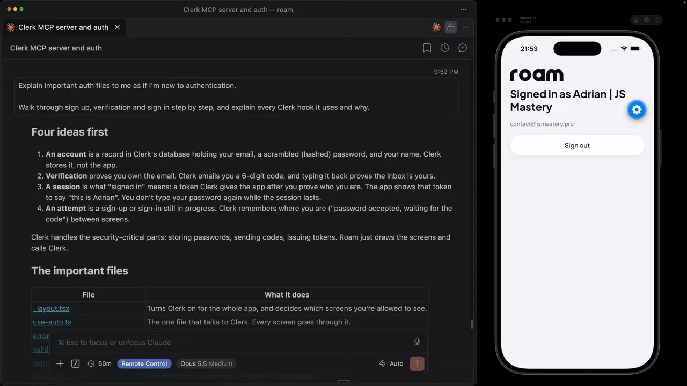
이어서 앱을 껐다 켜도 로그인이 유지되는 이유도 물었어요. 오래 가는 토큰을 Expo SecureStore에 저장하는데, iOS에서는 키체인, 안드로이드에서는 암호화 저장소라서 일반 앱 저장소보다 훨씬 안전하다는 답이에요. 발표자가 Clerk를 고른 이유는 인증이 이 앱의 핵심이 아니라서 빠르고 안전하게 끝내고 싶었고, 앱당 월간 유지 사용자(monthly retained users) 5만 명까지 무료이며, CLI·MCP·스킬 덕분에 AI와 잘 맞아서예요.
홈 화면과 네이티브 탭
홈 화면 프롬프트에는 네 가지가 들어가요. 현실적인 로컬 숙소 데이터, 홈 검색창에서 검색 화면으로 이동, Expo 네이티브 탭, expo-animation 스킬을 쓴 절제된 애니메이션이에요. 네이티브 탭은 자바스크립트로 탭 바를 그리지 않고 운영체제의 탭을 써서 iOS에서는 리퀴드 글래스, 안드로이드에서는 안드로이드다운 모습이 돼요. 에이전트는 이미지가 숙소 종류와 맞는지 확인하려고 사진을 모아 대조표까지 만들었어요.
아래 properties.ts가 이 시점의 '데이터베이스'예요. 한 숙소가 id, 제목, 종류(cabin), 도시, 1박 가격 289, 평점, 최대 인원, 반려동물 허용, 편의시설 목록, 분위기(vibes: quiet, cozy, secluded…), 설명을 가져요. 이 필드들이 나중에 Sanity 스키마의 출발점이 돼요.
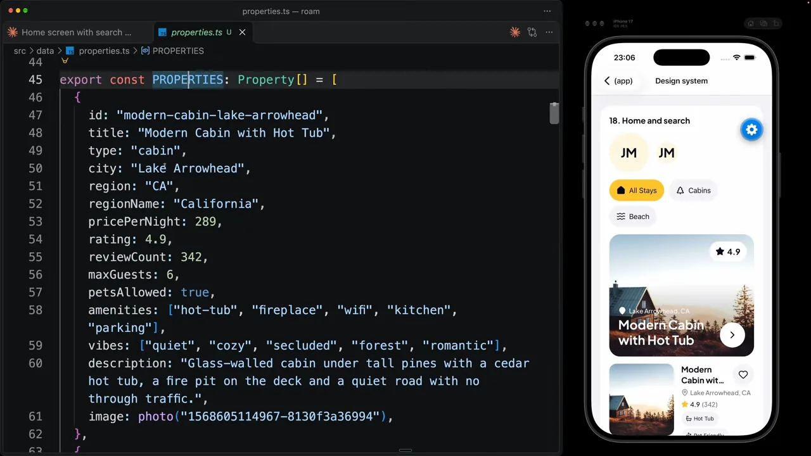
완성된 홈은 아래처럼 인사말, 한 문장 검색창, All Stays·Cabins·Beach·City·Villas 칩, 추천 숙소 카드, 그리고 맨 아래 리퀴드 글래스 탭(홈, 검색, 여행, 프로필)으로 이뤄져요. Cabins를 누르면 오두막만 걸러지고, 검색창에 문장을 쓰면 검색 탭으로 넘어가요. 다만 이 단계의 검색 결과는 아직 흉내예요.
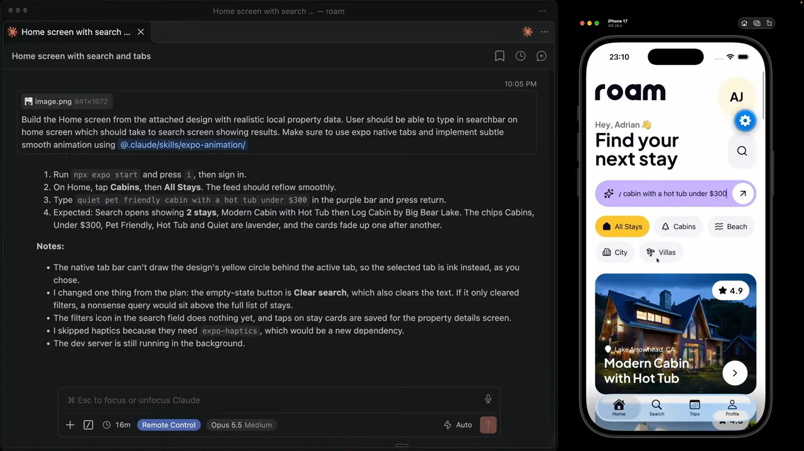
Sanity: 필터가 거르고 의미가 순위를 매겨요
숙소가 properties.ts 파일에 있으면 가격 하나, 오타 하나를 고칠 때도 코드를 바꾸고 앱을 새로 배포해야 해요. 그래서 콘텐츠를 Sanity로 옮겨요. Sanity Studio에서 누구나 코드 없이 편집하고, 이미지는 Sanity가 처리하고, 앱은 Sanity CDN(Content Delivery Network)에서 바로 읽어요. 별도 백엔드가 필요 없어요.
검색 문장에 섞인 두 종류의 정보
인트로의 검색 문장에는 성격이 다른 정보가 섞여 있어요. 오두막, 온수 욕조, 벽난로, 개, 300달러 이하, 2명은 숙소가 맞거나 틀리는 사실이에요. '조용한', '숲속'은 의미예요. '조용함' 체크박스는 없어요.
키워드 검색은 의미를 놓쳐요. 아래 화면에서 'quiet'로 찾으면 0건이에요. 그런데 Fernwood A-Frame 설명은 'Peaceful, secluded … deep in the pines'라서 손님이 원하는 바로 그 숙소예요. 단어가 안 겹칠 뿐이에요.
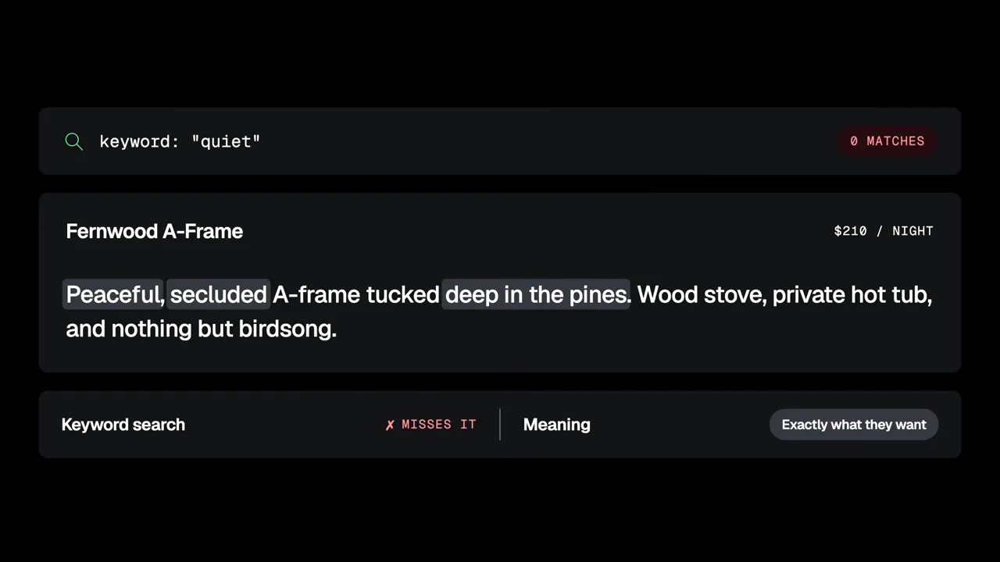
반대로 문장 전체를 매번 AI 모델에 넘기면 유연하지만 느리고, 검색마다 돈이 들어요. 무엇보다 정확한 숫자가 흐릿한 답에 기대게 돼요. '300 이하'라고 했는데 320달러 숙소를 보여 주면 안 되죠. 그래서 둘을 합쳐요.
Filters decide and then meaning ranks.
필터가 결정하고, 그다음 의미가 순위를 매겨요.
— 영상 1:49:25
그래서 콘텐츠 모델에는 구조화된 필드와 설명 텍스트가 둘 다 있어야 해요.
콘텐츠 모델을 설계하는 다섯 단계
Sanity 프로젝트는 npm create sanity@latest로 만들고, 빈 스키마로 시작해 studio 폴더에 둬요. 스킬(npx skills add sanity-io/agent-toolkit)과 MCP 서버(npx sanity@latest mcp configure)도 붙여요. 다만 발표자는 모델 설계만큼은 에이전트에게 무작정 넘기지 말라고 해요. 데이터베이스 다이어그램이 아니라 제품에서 시작하는 다섯 단계를 쓰는데, 슬라이드 여러 장에 걸친 설명을 한 줄로 모아 그렸어요.
1단계는 화면마다 필요한 정보를 적는 거예요. 아래 표에서 홈 카드는 대표 사진, 제목, 도시·지역, 평점이 필요해요. 검색은 가격, 인원, 종류, 편의시설, 반려동물 허용에 더해 'SOFT'로 표시된 quiet, cozy가 필요하고요. 맨 아래 'Ask about a stay'는 아직 안 만든 화면('NOT BUILT YET')이지만, 제품에 들어갈 걸 알기에 지금 반영해요. 리뷰나 예약 달력처럼 화면이 없는 미래 기능은 넣지 않아요.
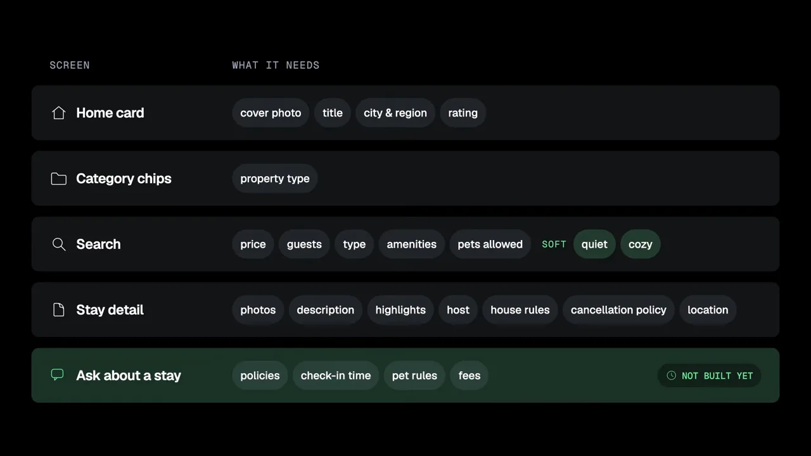
2단계는 묶는 기준이에요. 아래 질문 하나로 정해요. "공유되거나 따로 편집되나?" 예이면 Host·Policy처럼 별도 문서, 아니면 Location·House rules처럼 숙소 안에 둬요. 호스트 한 명이 숙소 여러 개를 가질 수 있고, 같은 정책을 여러 숙소가 쓰기 때문이에요.
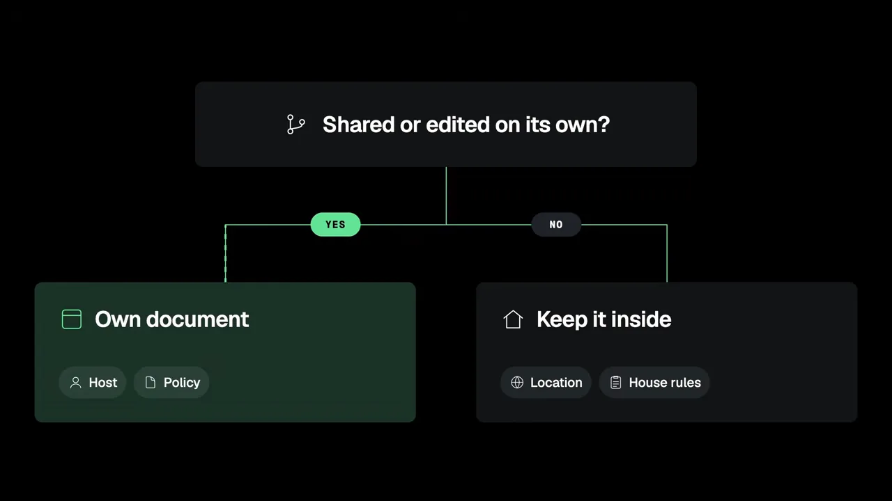
3단계가 Roam에서 가장 중요해요. 모든 필드는 표시, 정확한 필터, 의미 순위, 생성 문구 중 하나의 역할을 가져요. 아래 표의 Job 열과 Type 열을 같이 보면 역할이 타입을 정한다는 게 보여요. price는 정확한 필터라서 숫자, petsAllowed는 불리언, amenities는 Hot tub·Fireplace·Wi-Fi·Pool 같은 고정 목록이에요. 편의시설이 자유 텍스트면 한 편집자는 'hot tub', 다른 편집자는 'jacuzzi'라고 써서 정확한 검색이 무너져요.
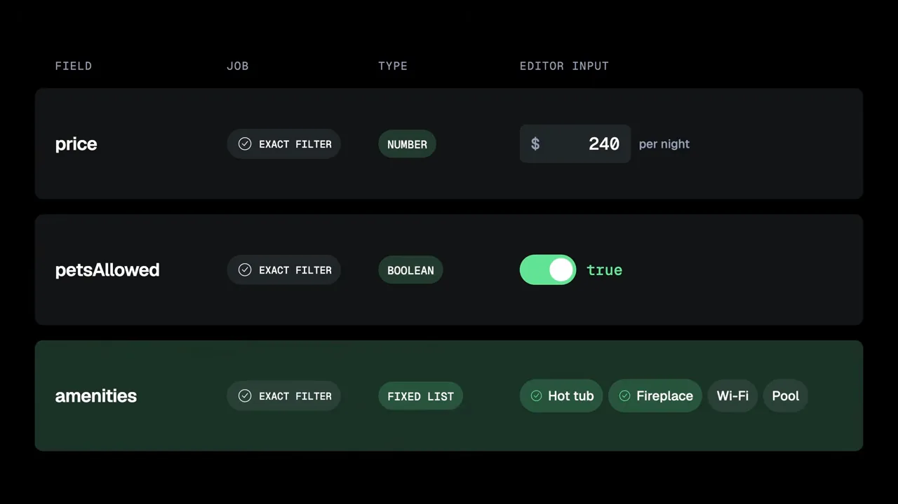
5단계는 데이터 보호예요. 아래 세 칸이 스키마에 넣을 규칙이에요. 호스트는 필수(Required), 평점은 0~5(Valid range, 최대 5), 제목·사진·가격·대체 텍스트는 빠뜨릴 수 없음(Can't forget)이에요. 숙소 종류도 고정된 집합에서만 골라요.
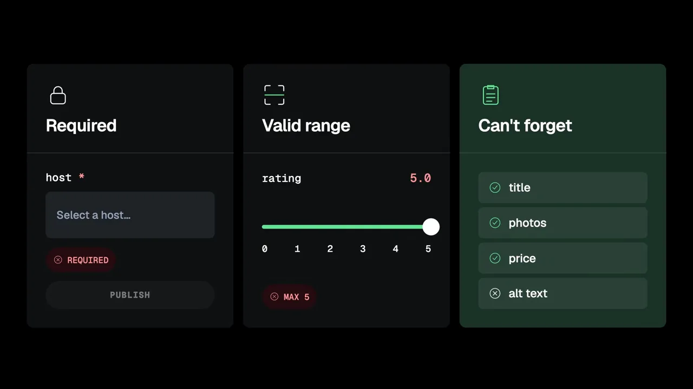
그 결과 문서 타입은 셋(숙소, 호스트, 정책), 참조는 둘(숙소 → 호스트, 숙소 → 취소 정책)이에요. 프롬프트는 "지금까지 만든 화면에서 콘텐츠 모델을 설계하고, 검색 결과와 상세 화면에 필요한 건 물어봐. 필터용 필드는 타입을 주고, 설명 텍스트는 임베딩을 위해 숙소에 두고, 호스트와 정책은 공유 문서로. Sanity MCP로 배포하고, 여러 번 돌려도 안전하게 숙소 30개를 시드해"예요. 스키마·데이터와 문구·임베딩을 두 프롬프트로 나눈 건, 뭔가 깨지면 절반만 다시 하려는 거예요.
에이전트는 스키마 배포 방식(스튜디오 파일 + CLI 배포, 확인은 MCP), 사진 저장(Sanity 이미지 자산), 추가 필터(침실 수), 상세 정보(체크인·아웃, 수수료와 총액, 긴 설명)를 물었어요. 결과로 숙소 30개, 호스트 10명, 정책 10개가 들어갔고, 스튜디오에서 한 호스트가 캘리포니아 숙소 4개를 가진 것도 '들어오는 참조'로 확인됐어요.
GROQ 맛보기
에이전트가 쓰는 쿼리를 읽을 수 있을 만큼만 배워요. Studio의 Vision 탭에서 바로 돌려 볼 수 있어요.
count(*[_type == "property"]) // 30
*[_type == "property" && petsAllowed == true && pricePerNight < 300] // 13건
*[_type == "property"]{ title, pricePerNight } // 필요한 필드만
*[_type == "property"]{ title, host->{ name } } // 참조 따라가기
*[_type == "property" && pricePerNight <= $maxPrice] // 값은 파라미터로조건을 &&로 잇는 두 번째 줄이 나중의 하드 필터와 같은 모양이에요. $가 붙은 값은 쿼리에 끼워 넣지 않고 따로 넘겨요.
의미 쪽: 임베딩
'글 쓰기 좋은 조용한 곳'과 '책상 있는 평화로운 호숫가 오두막'은 겹치는 단어가 거의 없지만 사람은 바로 관련 있다고 느껴요. 임베딩은 이 의미를 숫자로 바꾼 거예요. 아래 그림처럼 두 문장이 임베딩 모델을 거치면 숫자 줄이 되는데, 의미가 비슷하면 숫자도 가깝게 놓여요. 검색어도 같은 방식으로 바꾼 뒤 각 숙소와 얼마나 가까운지 재서 순위를 매겨요.
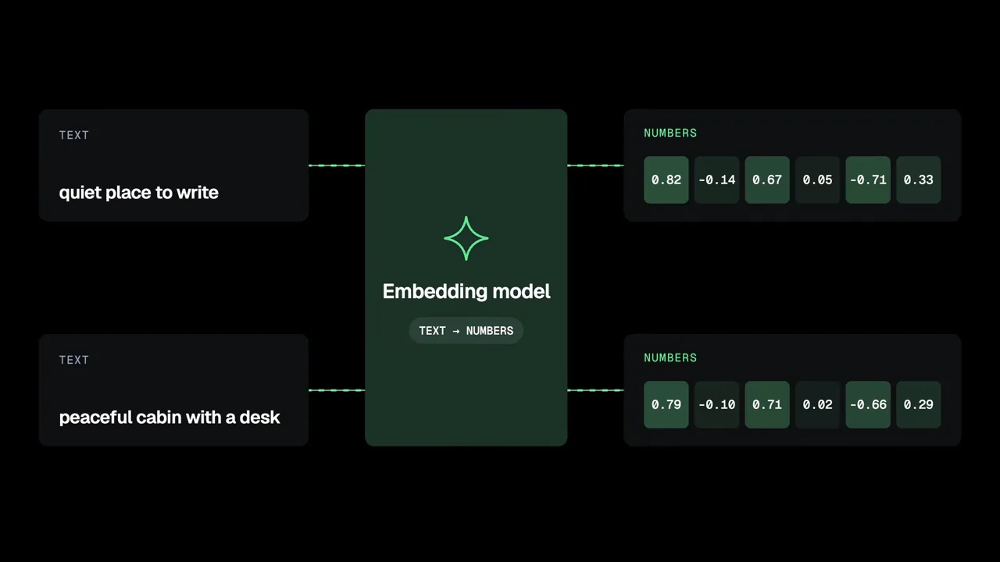
Sanity는 데이터셋 임베딩을 제공해서 벡터 데이터베이스를 따로 운영하고 동기화할 필요가 없어요. 발표자가 강조한 세 가지는 이래요.
- 무엇을 임베딩할지는 프로젝션으로 골라요 — 문서 전체가 아니라 분위기, 설명, 주변 환경처럼 '느낌'을 말하는 텍스트만요.
- 임베딩은 그 문서 안의 내용만 봐요 — 참조를 따라가지 않아요. 그래서 순위용 텍스트를 숙소 문서에 직접 둬요.
- 임베딩은 순위만 매기고 거르지 않아요 — 정확한 값은 늘 평범한 GROQ 조건에 남겨요.
숙소 소개문은 Sanity Agent Actions가 다시 써요. Sanity 안에서 돌아가는 AI 작업으로, 각 숙소의 타입이 있는 필드(가격, 방, 편의시설, 규칙)와 동네 정보만 근거로 요약과 설명을 써요. 그리고 지어낸 내용이 없는지 두 번 검사를 통과한 것만 발행해요. 30개 모두 통과했고, 임베딩이 새 문구를 반영했고, 홈은 이제 Sanity의 실제 숙소를 읽어요. 스튜디오에서 제목을 바꾸면 CDN 캐시 때문에 1분쯤 뒤 앱에 반영돼요.
아래 Vision 쿼리가 두 쪽을 합친 모습이에요. 위 세 줄이 하드 필터(cabin, 반려동물 허용, 300 이하)이고, 그 아래 score(text::semanticSimilarity("quiet cabin in the woods"))가 남은 숙소에 의미 점수를 매기고, order(_score desc)로 줄 세워요.
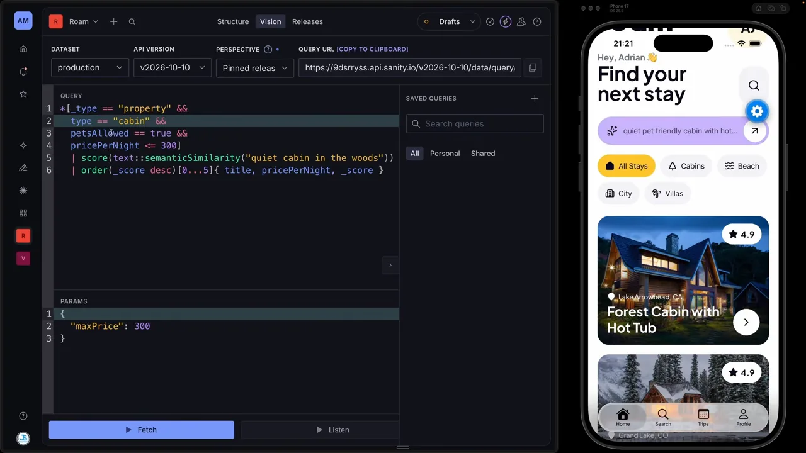
'글 쓰기 좋은 조용하고 외딴 곳'으로 점수만 매기면 숲속 트리하우스가 1등이 되고, '비 구경하기 좋은 해변'이면 빅토리아풍 해변 주택이 나왔어요. 끝으로 발표자는 에이전트에게 숙소 스키마의 각 필드가 표시용인지, 정확한 필터용인지, 의미 순위용인지, 그게 왜 타입을 정하는지 설명하게 해서 다섯 단계를 다시 점검해요.
PostHog: 질문에서 거꾸로 이벤트 정하기
여기까지는 "만들 수 있나?"에 답하는 과정이었어요. 이 장부터 질문이 바뀌어요. 기능이 동작하는지가 아니라, 손님이 온보딩 슬라이드 세 장과 카테고리와 검색을 정말 이해하고 쓰는지예요.
AI로 만들면 출시가 싸져요. 그러면 어려운 질문은 "출시할 수 있나"에서 "누가 신경 쓰나"로 옮겨 가요. 아래 그림이 그 상황이에요. 왼쪽 팀은 AI로 일주일에 10번 바꾸는데, 오른쪽 사용자 칸은 물음표뿐이고 둘 사이 아래에 'NO FEEDBACK LOOP'가 걸려 있어요.
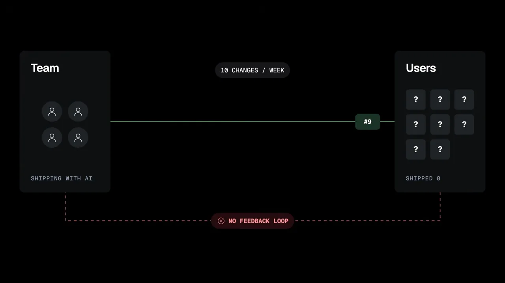
지금 측정하는 이유도 있어요. 다음 장에서 검색, 상세 화면, 채팅을 다시 만드는데, 미리 재 두지 않으면 개선됐다고 증명할 수 없어요.
이벤트가 아니라 질문에서 시작
데이터베이스 필드를 화면에서 뽑았듯이, 추적할 이벤트는 결정에서 뽑아요. 가장 흔한 실수는 모든 탭과 화면을 추적하는 거예요. 6개월 뒤 이벤트는 수백 개인데 기본 질문 하나에 답을 못 해요. 그래서 "사업이 알아야 할 게 뭔가?"를 먼저 묻고 거꾸로 이벤트를 정해요.
아래 슬라이드 왼쪽이 그 질문들이에요. 손님은 첫 검색 전 어디서 떠나나, 가입이 사람을 잃나, 검색이 숙소로 이어지나, 우리에게 없는 게 뭔가. 오른쪽은 마지막 질문의 예시로, '트리하우스' 검색 34%, '글램핑 돔' 22%가 결과 0건이에요.
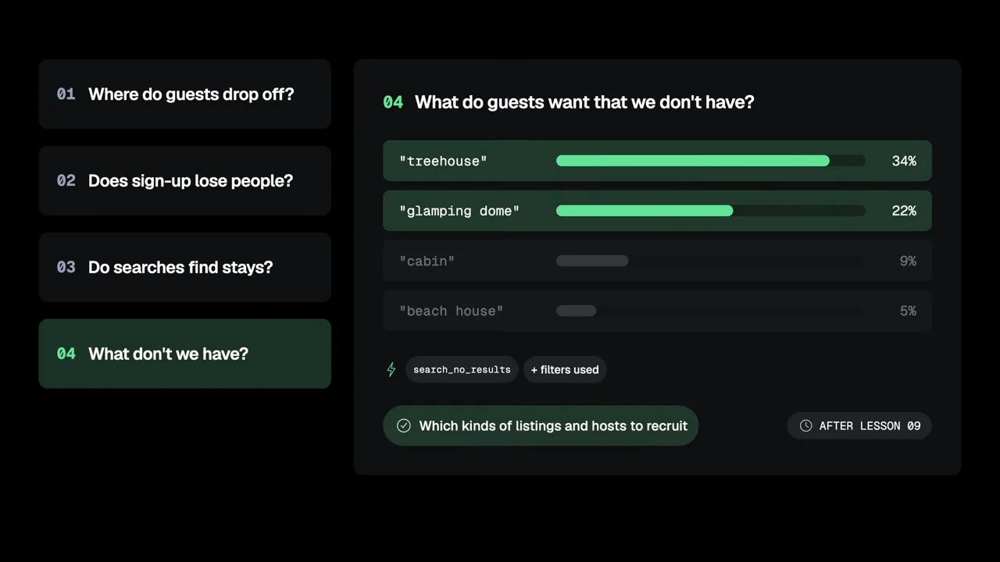
위저드로 설치하고 데모 사용자 만들기
설치는 npx -y @posthog/wizard@latest 하나예요. 위저드도 에이전트라서 코드베이스를 읽고 SDK 설치, 클라이언트 설정, 사용자 식별, 처리 안 된 에러 수집, 핵심 이벤트 추가, 분석 대시보드 생성까지 해요. 약 8분 걸리고, Clerk를 데이터 소스로 연결하고 Claude Code용 PostHog MCP도 붙일 수 있어요. 추가된 이벤트는 가입, 로그인, 로그아웃, 검색 제출, 카테고리 선택 같은 것들이에요.
사용자 한 명의 데이터로는 볼 게 없어서, 에이전트에게 웹 빌드를 진짜 손님처럼 써 달라고 해요. 데모 계정 13개로 가입하고, 칩을 누르고, 검색 세 번 하고, 로그아웃하는 걸 반복하는 프롬프트예요. 에이전트는 먼저 한 명으로 시험하자고 제안했고, Playwright로 웹 빌드를 움직였어요. 도중에 Clerk의 봇 방지에 막히자 개발 인스턴스에서만 잠깐 끄고 끝나면 다시 켜는 방법을 택했어요. 첫 사용자의 이벤트는 브라우저가 너무 빨리 닫혀 전송 전에 사라졌는데, 이것도 에이전트가 고치고 나머지 12명을 돌렸어요.
PostHog AI에게 묻기
데이터가 쌓인 뒤 PostHog AI에 평범한 영어로 물어요. 첫 질문은 "검색을 홈과 검색 탭 중 어디서 더 하나?"예요. 어느 검색창에 화면을 더 줄지 정하는 질문이에요. 발표자가 이벤트 이름을 'search submitted', 속성을 'source'로 잘못 말했는데, 아래 답의 첫 항목처럼 실제 이름은 stay_search_submitted와 entry_point라고 바로잡고 차트를 그렸어요. 결과는 검색 탭 14번, 홈 8번이었어요.
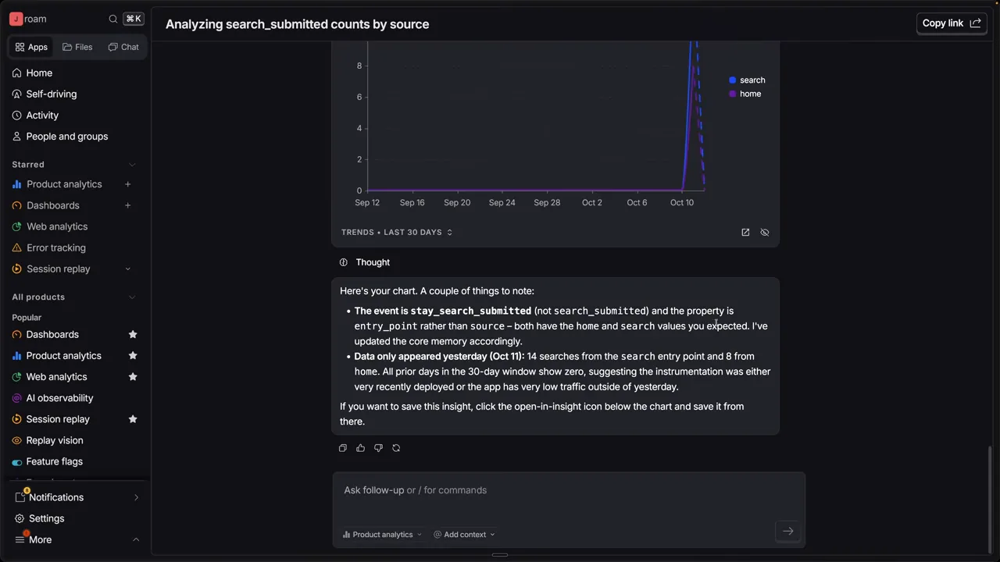
다음으로 가입 완료 사용자가 돌아와 검색하는지 보는 리텐션 차트를 그렸어요. 테스트 사용자는 오늘 오후에 생겨서 데이터가 하루치뿐이지만, 실제 앱에서는 앱의 생사를 가르는 차트라고 해요. 이어서 "Roam – Auth 대시보드를 만들어 줘. 가입 시작→완료 퍼널, 로그인 방식, 소셜 로그인 종류, 인증 코드 재전송 빈도"라고 했더니 할 일 6개를 스스로 세우고 대시보드를 만들었어요.
아래 대시보드 왼쪽 Sign-up funnel은 앱을 연 33명 중 2명만 가입했다고 보여 줘요. 실제 서비스라면 심각한 신호지만, 여기서는 테스트를 많이 해서 생긴 숫자예요. 오른쪽 Sign-in method breakdown은 비밀번호 로그인이 가장 많고 email_code는 2건이에요.
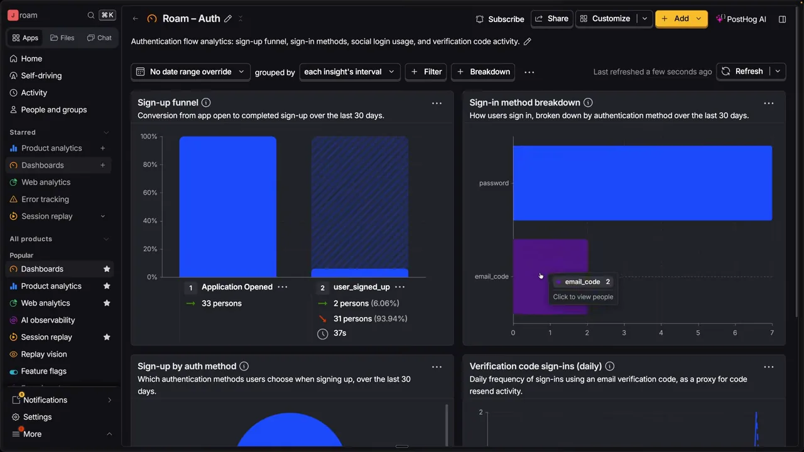
"지금 가장 흥미로운 인사이트가 뭐야?"처럼 열린 질문도 던졌어요. PostHog AI는 앱 열기 → 검색 → 숙소 보기 → 예약 버튼 퍼널, 검색 진입점, 검색당 평균 결과 수, 인기 카테고리(해변과 도시)를 정리해 노트북으로 남겼어요.
질문 기능이 예약으로 이어지나
정책 질문 기능을 붙인 뒤(8장) 발표자는 PostHog로 돌아와요. 새 코드는 필요 없어요. 이미 있는 이벤트로 '숙소 보기 → 질문 화면 열기 → 답 받기 → 예약 버튼' 퍼널을 지난 30일, 전환 기간 1일로 만들게 해요. 그런데 퍼널이 비어 있었어요. PostHog MCP로 원인을 찾게 했더니, 앱을 쓴 유일한 사람이 내부 사용자라 필터에 걸려 사라진 거였어요. 앱 코드는 바꾸지 않고 필터만 고쳤어요.
데이터가 부족해서 PostHog MCP와 앱의 실제 질문 로직으로 손님 세션 20개를 시뮬레이션했어요. 아래 표가 단계별 세션 수예요. 숙소를 본 20개 중 질문 화면을 열고 아무것도 묻지 않은 게 3개, 질문한 게 11개, 답을 받은 게 8개, '답 없음'을 받은 게 4개, 예약 버튼을 누른 게 5개예요.
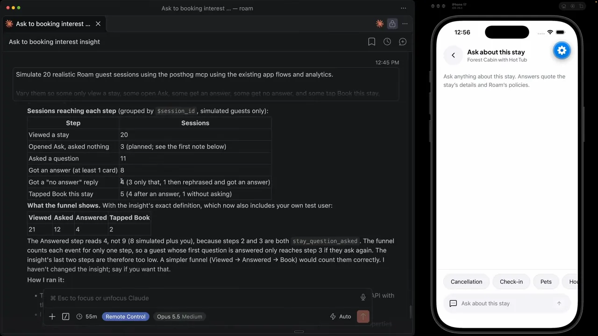
stay_question_asked)라서 다시 물어야만 다음 단계로 세어지기 때문이에요. 영상 3:23:27에서 보기마지막으로 PostHog self-driving을 켜요. '보기와 예약 사이 어디서 손님이 막히나'를 평범한 말로 적으면 스카우트 역할의 에이전트가 제품 데이터를 읽고 받은편지함에 보고서를 남기고, GitHub 저장소가 연결돼 있으면 고치는 PR(Pull Request)도 열 수 있어요. 스카우트가 찾은 결과는 이래요. 추천 주제 칩을 누르면 100% 답을 받지만, 직접 쓴 질문은 거의 40%가 '답할 내용이 없어요'를 받았어요. 흐름은 감지 → 조사 → 수정 → 검증이고, PostHog가 지켜보되 무엇을 출시할지는 사람이 정해요.
자연어 검색: 패턴 파서에서 서버와 Jev로
홈 검색창은 지금까지 로컬 데이터로 흉내만 냈어요. 이제 검색 결과 화면을 디자인대로 만들고 Sanity 데이터에 연결해요. 프롬프트는 "첨부한 디자인 그대로 검색 결과 화면을 만들고 Sanity 데이터에 연결해. 결과가 있는 검색과 없는 검색을 PostHog에 남겨"가 전부예요. 필터와 순위, GROQ 파라미터, 임베딩 이야기는 이미 AGENTS.md에 있어서 다시 쓸 필요가 없어요.
에이전트는 쿼리를 어디서 돌릴지(앱에서 Sanity CDN으로), '달 위의 이글루'처럼 아무것도 못 알아들으면(빈 화면), 이벤트를 어떻게 남길지(검색 완료 이벤트 하나에 결과 수, 결과 유무, 진입점, 쓴 필터 종류만 남기고 검색어 원문은 남기지 않음)를 물었어요.
아래가 발표자가 정리한 검색 흐름이에요. ① 손님이 문장을 쓰면 ② parseQuery()가 정확한 필터(종류 cabin, 최대 가격 300, 편의시설 hot tub, 반려동물 yes)와 순위용 텍스트(quiet)로 나누고 ③ GROQ 쿼리를 만들어 ④ Sanity가 필터, 의미 점수, 정렬을 처리하고 ⑤ 결과를 돌려줘 ⑥ 화면에 칩과 함께 보여 줘요. 아래쪽 두 칸이 차이를 보여 줘요. ⑦ 칩을 지우면 2단계로 돌아가 검색을 다시 하지만, ⑧ 정렬 변경은 폰에서 이미 받은 결과만 다시 줄 세워요.
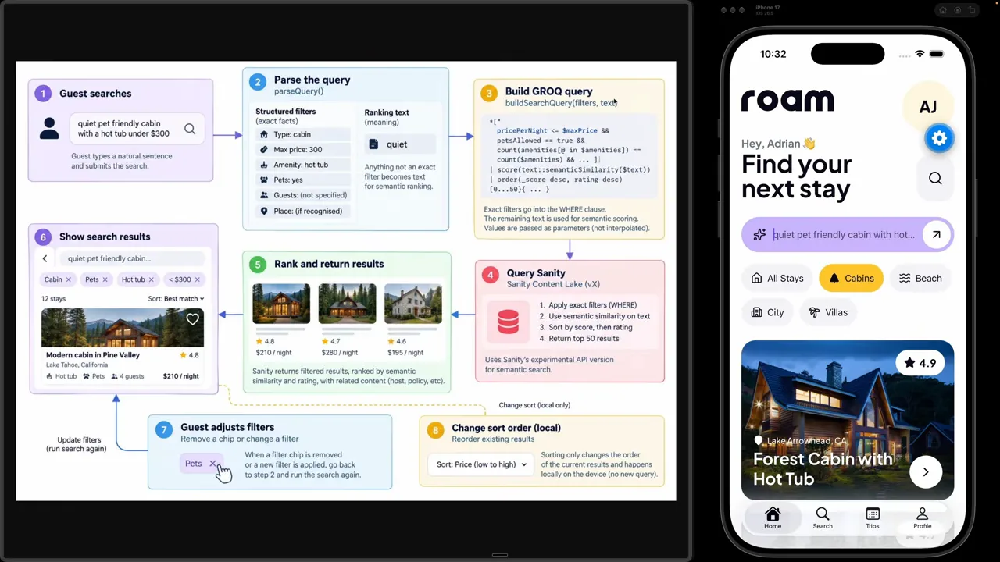
결과 화면은 정렬(가장 싼 순, 평점 순, 의미 기반 '베스트 매치')과 미리 선택된 칩까지 디자인대로 나왔어요. '조용히 쉴 아늑한 곳'처럼 의미만 있는 문장도 그럴듯한 숙소를 찾았어요.
패턴 파서가 깨지는 곳
발표자는 일부러 깨 봐요. "no pets"를 검색하면 'pet'이라는 단어를 보고 반려동물 허용 필터를 켜요. 손님이 원한 것과 정반대예요. 아래 화면처럼 "For 3 nights"를 쓰면 3을 인원으로 읽어 '3 guests' 칩이 생겨요. 패턴 매칭은 단어와 숫자는 보지만 부정과 문맥은 몰라요.
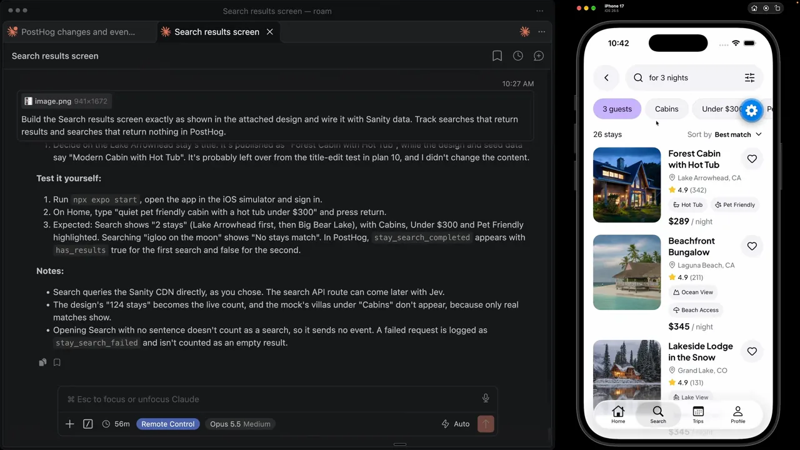
문제가 하나 더 있어요. 검색 로직이 앱 안에서 돌면, 그 로직이 쓰는 비밀 키도 앱 번들에 들어가요. 다음에 쓸 도구들은 비밀 키가 필요해서 서버로 옮겨야 해요.
서버로 옮기기: Sanity Context와 Jev
새로 쓰는 도구는 둘이에요. Sanity Context는 AI 에이전트가 Sanity 콘텐츠에 들어오는 통제된 문이에요. Sanity가 호스팅하는 읽기 전용 MCP 서버이고, 스키마를 이해해요. 엔드포인트 하나는 한 가지 모드로 동작해요. 오늘 쓰는 GROQ 모드는 스키마를 알고 GROQ와 앞서 켠 의미 검색을 돌려요. 다음 장의 지식 베이스 모드는 정책 같은 문서형 콘텐츠용이에요. 서버에서 Sanity를 바로 불러도 되지만, 무엇을 볼 수 있는지 우리가 정하고 토큰은 읽기만 할 수 있어서 AI에게 넓은 권한을 주지 않아도 돼요.
Jev는 문장을 쓰지 않는 결정 모델이에요. 상태와 구조화된 질문을 주면 확률이 붙은 구조화된 답을 돌려줘요. 참인지 거짓인지, 어느 선택지가 맞는지, 정한 척도로 몇 점인지만 답해요. 라우터에 필요한 건 문단이 아니라 "반려동물: 원함/피함 + 확신도"이기 때문이에요. 반대로 Jev가 하지 않는 일도 분명해요. GROQ를 쓰지 않고, 도구를 부르지 않고, 가격이나 인원을 정하지 않아요. 그건 코드가 해요.
- Context 스킬 설치 — 프로젝트 루트에서
npx skills add sanity-io/context --all. - 스튜디오 배포 —
studio폴더에서npx sanity deploy. Context 화면은 배포된 스튜디오가 필요해요. - MCP 엔드포인트 만들기 — 스튜디오의 Context에서 이름을 'roam-search'로, 데이터셋 production, 필터는
_type in ["property", "host", "policy"]로 읽을 범위를 정해요. 엔드포인트 URL(Uniform Resource Locator)이 생겨요 - 조직 API(Application Programming Interface) 토큰 — 프로젝트가 아니라 조직 단위로 Context viewer 권한 토큰을 만들어요. 처음엔 프로젝트 토큰을 만들었다가 에이전트가 계획 단계에서 권한이 없다고 짚어 줬어요.
- Jev API 키 — TypeSafe 콘솔에서 발급해요. 크레딧이 없으면 결제 정보를 넣어야 하는데, 발표자는 5달러를 충전했어요.
- 환경 변수 — 세 값 모두
EXPO_PUBLIC_접두사 없이.env.local에 둬요. 서버에만 있고 앱은 못 봐요.
그다음 프롬프트예요. "검색을 서버로 옮겨. 손님 문장을 받는 API 라우트를 만들고, AI SDK로 Jev를 불러 각 필터(반려동물, 편의시설, 종류, 분위기)가 원함/피함/언급 없음 중 무엇인지, 각 숫자가 무엇을 뜻하는지 읽게 해. 그다음 roam-search Context 엔드포인트로 임베딩이 있는 GROQ를 돌려. 선택지와 숫자는 코드가 갖고 쿼리도 코드가 만들어. Jev는 코드가 준 선택지에서만 골라."
에이전트는 계획 전에 아래 질문을 띄웠어요. AGENTS.md에는 Jev를 experimental_evaluate로 부른다고 적혀 있는데, 설치된 ai@7.0.137에서는 그게 experimental_decide의 옛 별칭이고 evaluationModel도 decisionModel로 바뀌었다는 내용이에요. 추천안은 새 이름을 쓰고 AGENTS.md도 고치는 거였어요.
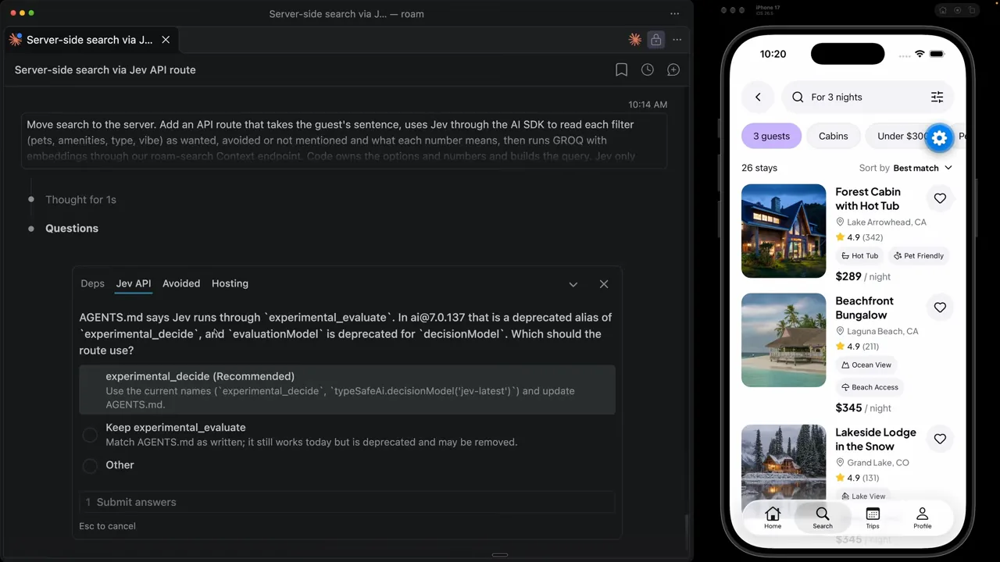
완성된 POST /api/search는 먼저 Clerk 세션을 확인하고, 요청 본문을 코드가 가진 선택지와 대조하고, Jev로 필터를 정하고, Context 엔드포인트로 쿼리를 돌려요. 배포하려면 EAS 호스팅이 필요하지만 지금은 개발 서버에서 돌아요.
에이전트에게 Jev 라우터를 설명하게 하자, 정확히는 라우터가 아니라 Jev 호출 한 번으로 객관식 질문 약 50개에 한꺼번에 답하는 구조라고 했어요. 코드와 Jev와 Sanity가 나눠 맡는 일을 그림으로 옮기면 이래요.
아래 화면이 그 설명의 원본이에요. 표의 Question ids 열을 보면 반려동물 질문 1개, 편의시설 18개, 숙소 종류 4개, 분위기 24개가 모두 원함/피함/언급 없음 중에 고르고, 숫자 질문 0~6개는 최대 가격/인원/침실/기타 중에 골라요. 숫자 질문은 "'a villa with a pool for 6'에서 6은 무슨 뜻?"처럼 문맥과 함께 물어요.
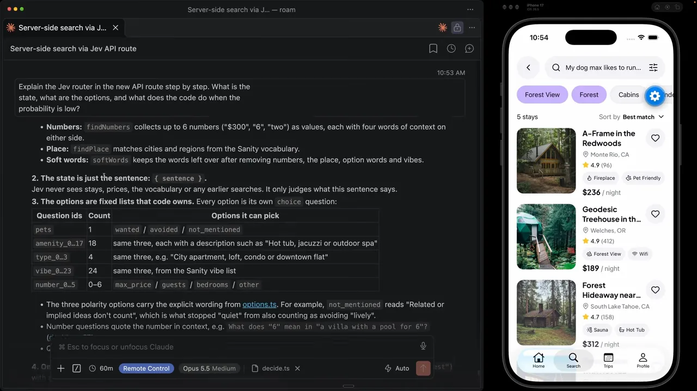
다시 깨 보기
에이전트가 제안한 문장으로 다시 시험해요. 아래 "no pets, a villa with a pool for six"는 이번엔 빌라, 6명, 반려동물 불가(No Pets), 수영장 칩이 정확히 켜졌어요. 앞서 반대로 읽던 문장이에요.
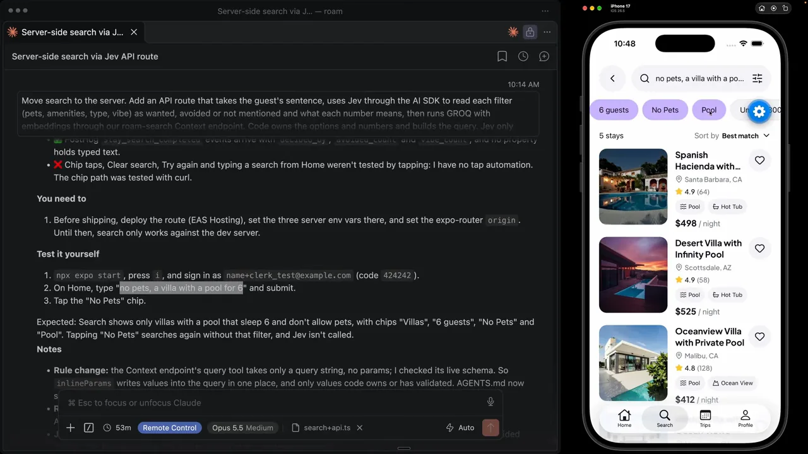
"anything but a city apartment … jacuzzi"는 자쿠지 필터가 없는데도 온수 욕조로 이해하고, 휴식·럭셔리 분위기까지 잡았어요. 300밀리초가 안 걸렸다고 해요. "우리 개 맥스는 숲에서 뛰는 걸 좋아해"처럼 숙소 조건이 하나도 없는 문장에도 숲 전망과 반려동물 허용 숙소 다섯 곳을 찾았어요. 마지막으로 인트로의 긴 문장을 넣으니 조건에 딱 맞는 숙소 두 곳이 나왔어요.
비용도 확인해요. 아래 TypeSafe 콘솔에서 요청 25번, 토큰 약 21만 개에 쓴 돈이 0.0066달러예요. 충전한 5달러가 거의 줄지 않았어요.
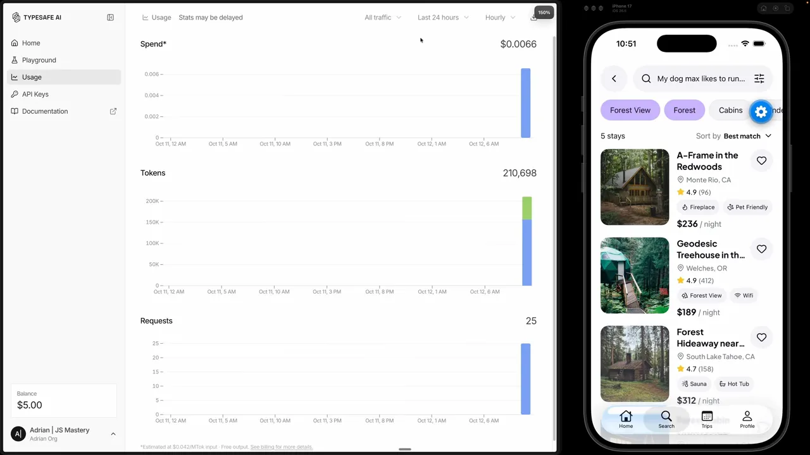
Jev 말고 다른 모델로 바꾸려면
앱이 기대는 건 Jev가 아니라 규칙 하나예요. "코드가 선택지와 숫자를 소유하고, 모델은 코드가 준 것 중에서만 고른다." 그래서 결제 정보를 넣기 싫다면 OpenAI, Anthropic, Gemini 등 AI SDK가 지원하는 모델로 바꿔도 돼요. 아래 프롬프트가 그 예시예요. Jev가 하던 결정을 같은 자리, 같은 선택지로 두고, 스키마로 검증하는 구조화된 출력으로 받고, 확신도를 낮음/중간/높음으로 받아 코드가 기준을 정하라는 내용이에요.
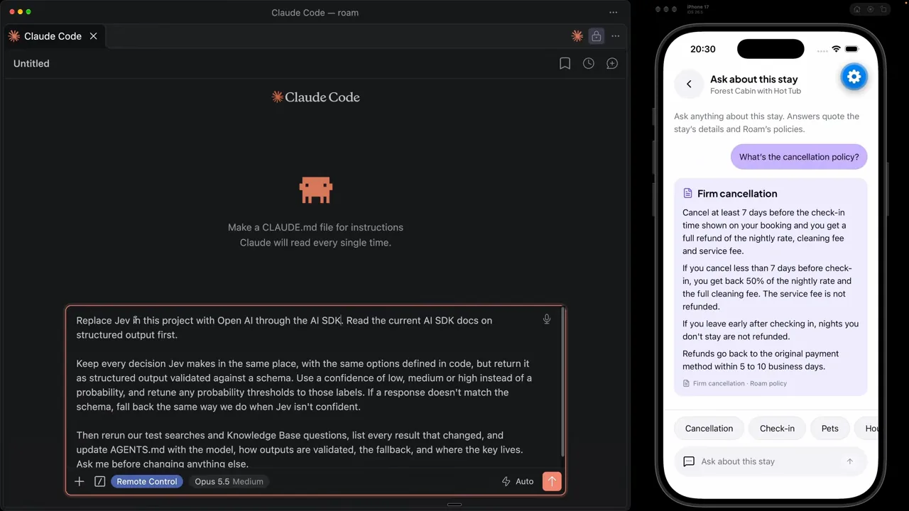
상세 화면과 정책 질문: 지식 베이스는 색인으로만
상세 화면은 손님을 실제로 묵게 설득하는 화면이에요. 디자인 이미지를 주고 "Sanity 데이터와 하우스 룰, 취소 정책까지 연결해. 예약은 범위 밖이라 'Book this stay'는 '곧 지원' 메시지만. 숙소를 열면 PostHog에 남겨"라고 해요. 에이전트는 디자인에 없는 하우스 룰과 전체 정책을 어디 둘지(시트로), 날짜를 아직 안 고르니 총액을 어떻게 쓸지(몇 박 기준), 호스트를 누르면 뭘 할지(호스트 시트)를 물었어요.
아래가 완성된 화면이에요. 위에서부터 스와이프 사진, 숙소 이름과 위치, 편의시설 아이콘, 'Ask about policies'와 'Free cancellation' 카드, 호스트, 맨 아래 1박 가격과 노란 예약 버튼이에요.
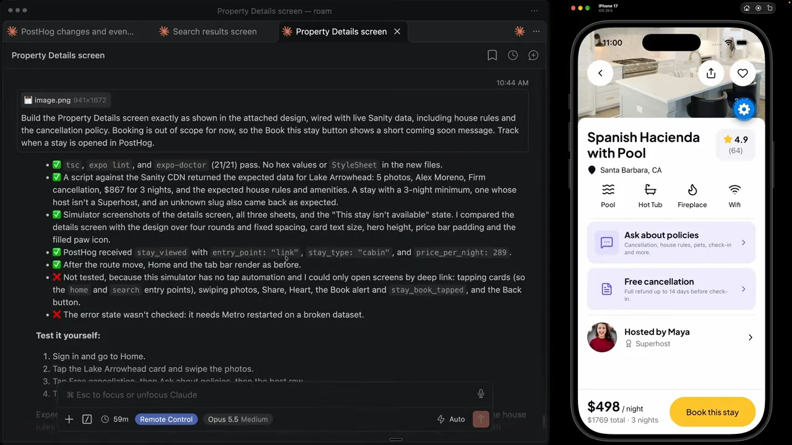
질문 화면은 디자인 이미지 없이 만들어요. 에이전트가 이미 디자인 시스템을 알기 때문에 디자인 결정을 프롬프트에 적으면 돼요. "답은 문단이 아니라 주제마다 카드 한 장, 출처 라벨 달기. 주제 칩을 누르면 질문 보내기. 입력창엔 메시지 아이콘. 지금은 백엔드 없이 샘플 답변으로." 인증을 Clerk 전에 가짜로 만든 것과 같은 이유예요. 경험을 먼저 완성하고 진짜 시스템은 나중에 붙여요.
아래 샘플 버전에서 'Can I bring my dog?'에 카드 두 장이 왔어요. 위 'Pets allowed'는 이 숙소의 하우스 룰, 아래 'Pets and service animals'는 Roam 전체 정책에서 온 답이고, 각 카드 아래에 출처가 붙어요.
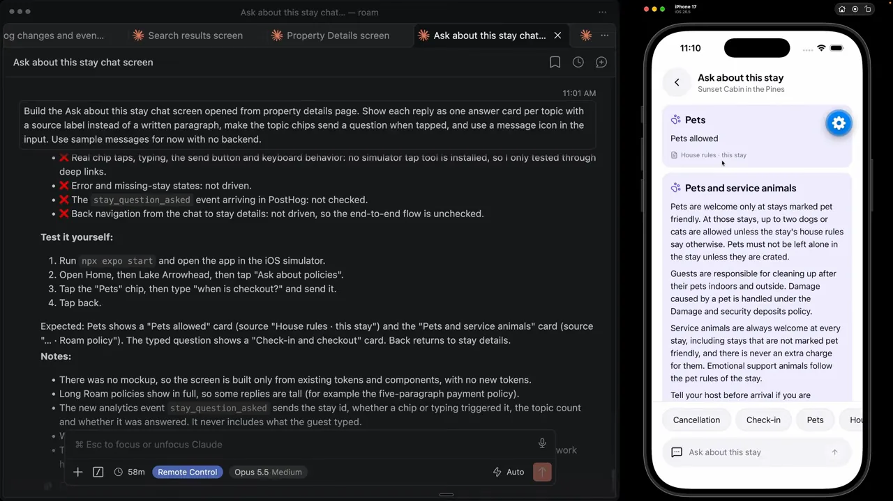
왜 답을 AI가 쓰면 안 될까
예약 직전에 멈추는 이유는 사진이나 가격보다 답 없는 질문 하나일 때가 많다고 해요. 체크인은 몇 시인지, 파티를 해도 되는지, 숨은 비용은 없는지 같은 것들이요. 답을 못 들으면 손님은 떠나고, 사람이 매번 정책을 읽어 답하면 비용이 들고, AI가 답하면 살짝 틀린 답이 나올 수 있어요.
먼저 사실이 두 종류라는 걸 나눠요. 아래 그림 위 칸 'Stay-specific'은 체크인 15시, 반려동물 요금 25달러, 하우스 룰 '파티 금지', 편의시설 '온수 욕조'처럼 숙소 문서에 있는 값이에요. 아래 칸 'Roam-wide'는 취소, 환불, 서비스 수수료처럼 여러 숙소에 걸친 정책 문서예요.
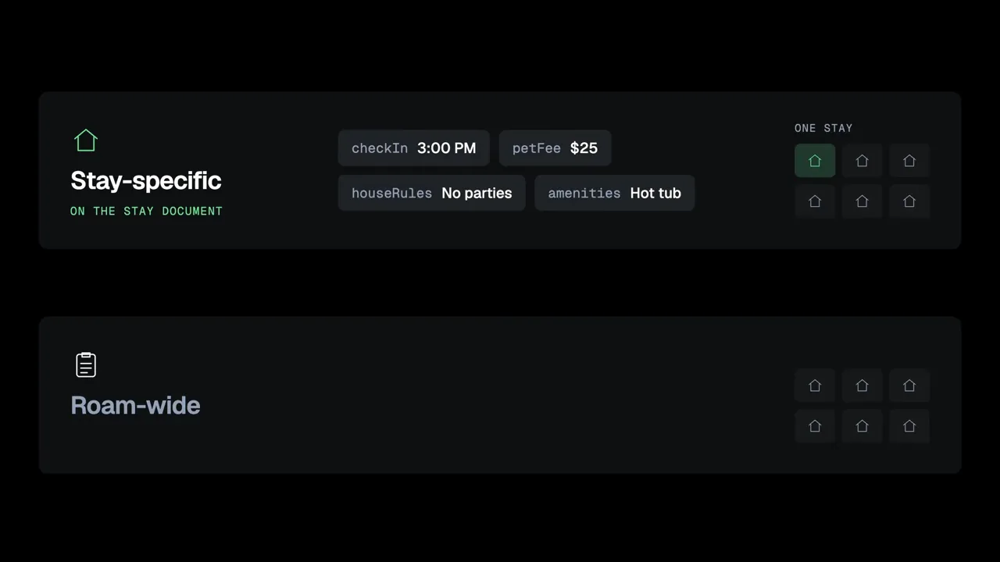
발표자는 단순한 방법부터 시도했다고 해요.
| 방법 | 좋은 점 | 깨지는 곳 |
|---|---|---|
| 1. AI가 정책을 읽고 답을 씀 | 잘 동작함 | 바꿔 말하거나, 두 정책을 섞거나, 그럴듯하지만 원문에 없는 내용을 더할 수 있음 |
| 2. 키워드 검색 | 정확함 | '개 데려가도 돼요?'와 '반려동물 동반 여행' 정책을 못 이음 |
| 3. 지식 베이스를 색인으로 | 주제를 찾아 줌 | 항목이 원문을 다시 써서, 그대로 보여 주면 안 됨 (그래서 원문으로 되돌아감) |
지식 베이스를 색인으로만 쓰기
Sanity의 지식 베이스는 넣어 준 원본을 읽어 주제별로 묶고 항목을 만들어요. 아래 그림 왼쪽이 원본이에요. 취소 정책, 환불 정책, 반려동물 정책, 서비스 수수료 정책이 있고, PDF(Portable Document Format)와 웹사이트(roam.com/help)는 'LATER'로 표시돼 나중에 원본이 될 수 있어요. 가운데 지식 베이스가 원본 읽기 → 주제 묶기 → 항목 만들기 → 충돌 표시를 하고, 오른쪽에 취소·반려동물·수수료 주제가 생겨요. 취소와 환불 정책에는 'CONFLICT'가 붙었어요.
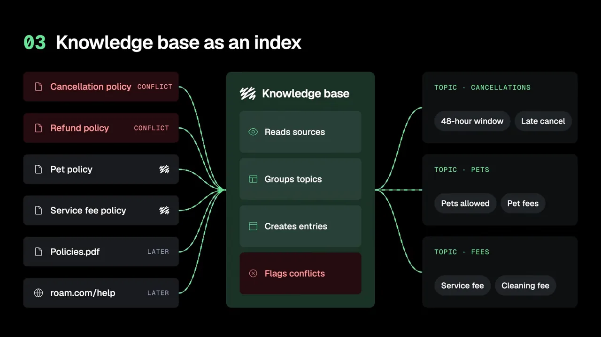
그런데 빌드 과정에서 내용이 다시 쓰여요. 관련 정책을 합치고 말을 바꾸기도 해서, Roam에서는 정책 12개가 항목 10개가 됐어요. 주제를 찾는 데는 괜찮지만, 손님이 그 바뀐 글을 공식 정책처럼 읽으면 안 돼요. 그래서 아래 네 칸처럼 역할을 나눠요. 지식 베이스는 주제를 찾고, AI(Jev)는 관련 있는지 판단하고, Sanity 문서는 원문을 갖고, 손님은 정확한 원문을 봐요.
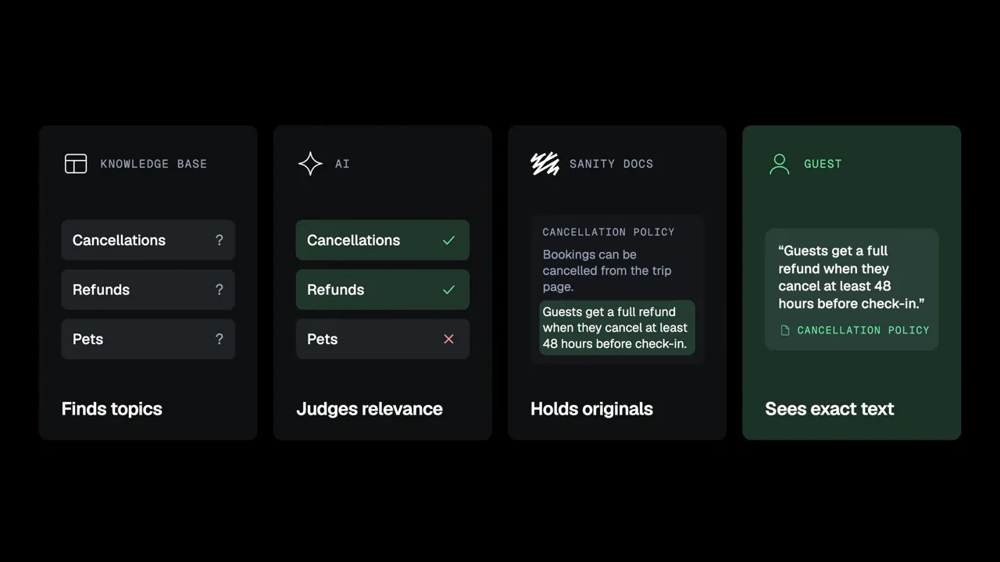
숙소마다 다른 사실은 지식 베이스를 거치지 않아요. 아래 그림에서 '반려동물 요금이 있나요?'라는 질문은 위쪽 'This stay'(Cedar Hollow의 체크인 15시, 요금 25달러)에서 바로 답을 찾고, 아래쪽 'Roam policies'(지식 베이스의 취소·서비스 수수료 정책)는 모든 숙소에 해당하는 규칙을 맡아요.
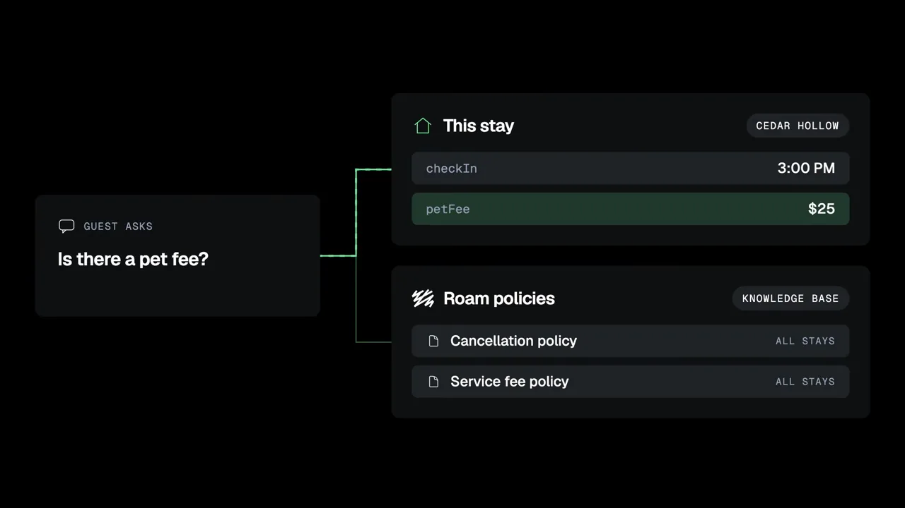
설정하고 연결하기
스튜디오의 Context 화면에서 새 지식 베이스 'Roam guest policies'를 만들고 목적(purpose)을 적어요. 목적은 빌드의 모든 단계에서 읽혀서 어떤 원본을 남기고, 어떤 주제를 앞세우고, 항목을 얼마나 깊게 쓸지 정해요. 발표자가 쓴 목적은 이래요. 숙소를 보거나 예약한 손님의 예약·정책 질문에 답한다. 취소·환불, 결제·수수료, 반려동물, 체크인·아웃, 하우스 룰, 파손, 안전을 앞세운다. 개별 숙소의 체크인 시간·요금, 매물 정보, 마케팅 문구, 호스팅 관련 내용은 뺀다.
원본으로 Roam 프로젝트 production 데이터셋의 정책 문서를 고르고 'Build entries'를 누르면 항목이 만들어져요. 그다음 지식 베이스 모드의 MCP 엔드포인트 'roam-policies'를 만들어 URL을 .env.local에 넣어요. 토큰은 앞서 만든 조직 토큰을 그대로 써요.
프롬프트는 짧아요. "질문 채팅을 API 라우트를 통해 roam-policies 지식 베이스 엔드포인트에 연결해. Jev가 질문마다 어떤 항목이 답인지 고르고, 채팅은 그 정확한 글을 출처와 함께 카드로 보여 줘." 설계가 이미 정해져 있어서예요. 에이전트는 카드에 원문 정책을 보일지 지식 베이스 항목 글을 보일지를, 미리보기를 곁들인 선택지로 물었어요. 발표자는 원문 쪽(추천안)을 골랐고, 실패하면 키워드 매칭으로 대신 답하게 했어요.
완성된 POST /api/ask도 Clerk 세션을 먼저 확인해요. Jev가 숙소 주제와 지식 베이스 항목 중 무엇이 답인지 고르고, 항목에 적힌 출처 정책 문서를 따라가 원문을 카드에 보여 줘요.
고장 나고, 에이전트가 원인을 찾다
처음 시험에서는 '우리 카발리에 킹 찰스 스패니얼 데려가도 돼요?' 같은 질문에 '찾는 중'만 뜨고 답이 없었어요. 화면을 캡처해 에이전트에게 보내자, 추측하지 않고 PostHog MCP와 bash로 확인했어요. 답은 Jev가 아니라 키워드 대체 경로에서 나온 거였고, 원인은 개발 서버가 새 지식 베이스 URL을 읽지 못한 채 돌고 있어서였어요. 앱만 새로고침해서는 안 되고 서버를 완전히 끄고 다시 켜야 했어요.
아래 화면 왼쪽이 에이전트의 보고예요. 새 서버가 SANITY_CONTEXT_KB_URL을 읽었고, 옛 서버에는 이 값이 없었다고 해요. 오른쪽은 재시작 뒤 받은 답이에요. 'Pets and service animals' 카드는 Roam 정책 원문 그대로이고, 카드 아래에 'Pets and service animals · Roam policy'라는 출처가 붙어요. 그 위에는 이 숙소 하우스 룰에서 온 카드가 있어요.
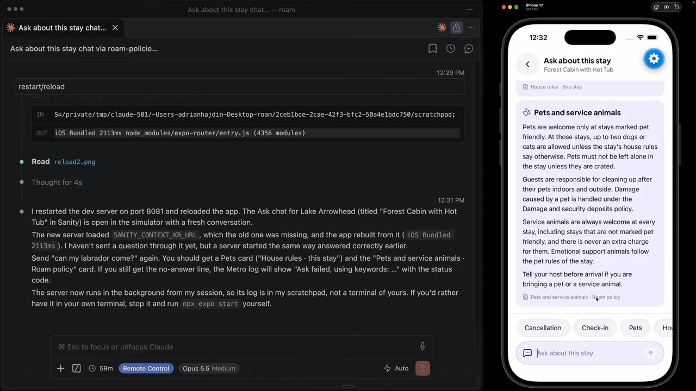
'개 데려가도 되고 체크인은 언제?'처럼 두 질문을 섞어도 체크인 카드와 반려동물 카드가 각자의 출처와 함께 왔어요.
"와이파이 비밀번호가 뭐예요?"처럼 근거가 없는 질문에는 '숙소 정보와 Roam 정책 어디에도 답이 없어요'라고 정직하게 말하고 고객 지원을 안내해요. 발표자는 스튜디오에서 '체크인 문제와 지원' 정책을 열어, 카드 문장 '체크인 안내는 48시간 전에 보내요'가 원문 그대로라는 것도 보여 줘요. 발표자는 이 질문 기능과 자연어 검색을 앱의 두 간판 기능으로 꼽아요.
다음 기능을 직접 붙이는 법
Roam은 이제 가입, 자연어 검색, 숙소 상세, 출처 있는 정책 답변, 사용 분석까지 해요. 찜하기(상세 화면 위의 저장 버튼), 예약한 여행을 보는 계정 화면, 예약, 호스트가 숙소를 올리는 화면, 알림, 리뷰는 강의에서 만들지 않아요. 중요하지 않아서가 아니라, 이제 따라야 할 과정을 이미 알기 때문이라고 해요.
새 기능을 시작할 때 쓰는 템플릿 프롬프트가 아래예요. 코드를 쓰기 전에 AGENTS.md를 읽고 이 기능이 건드리는 부분을 살핀 다음, 이 기능이 푸는 문제, 필요한 데이터, 데이터를 둘 곳, 새 서비스가 필요한지, 필요하다면 트레이드오프, 보안·개인정보 우려, 기능이 통했는지 잴 방법(PostHog)을 설명하라는 내용이에요. 그리고 바뀌었을 수 있는 건 최신 문서를 조사하고, 계획을 쓰기 전에 중요한 질문을 하라고 해요.
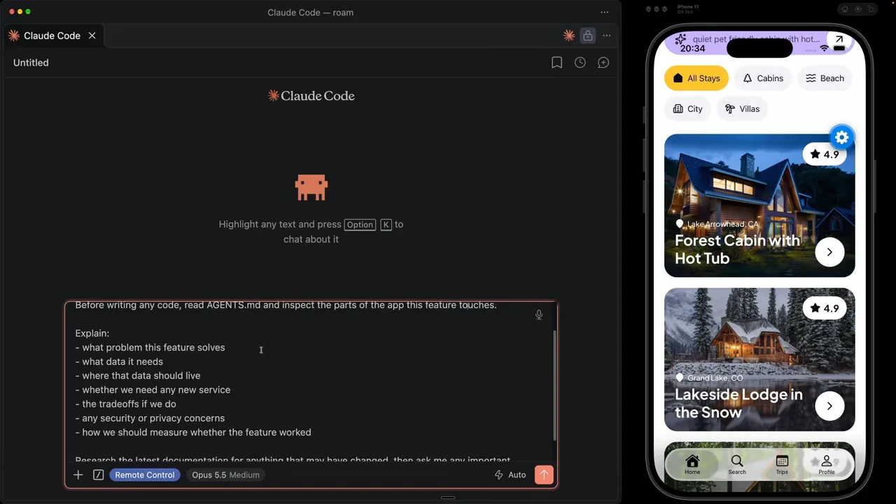
에이전트가 새 데이터베이스, SDK, 결제 서비스를 추천해도 그대로 받지 말라고 해요. 왜인지 묻고, 대안을 비교하고, 문서를 확인해서 프로젝트에 맞을 때만 계획을 쓰게 해요. 그다음은 지금까지와 같아요. 계획을 검토하고, 승인하고, 결과를 직접 테스트해요.
발표자는 바로 쓸 수 있는 시작 프롬프트도 준비했어요. 아래 new-features.md 오른쪽 목차가 그 목록이에요. 계정, 찜한 숙소, 예약, 호스트 쪽, 운영 출시예요. 찜하기 프롬프트를 보면 "만들기 전에 사용자별 찜 목록을 어디 저장할지 선택지를 비교하라", "숙소 콘텐츠는 Sanity에, 사적인 사용자 데이터는 공개 데이터셋 밖에 두라"처럼 결정을 먼저 묻게 돼 있어요.
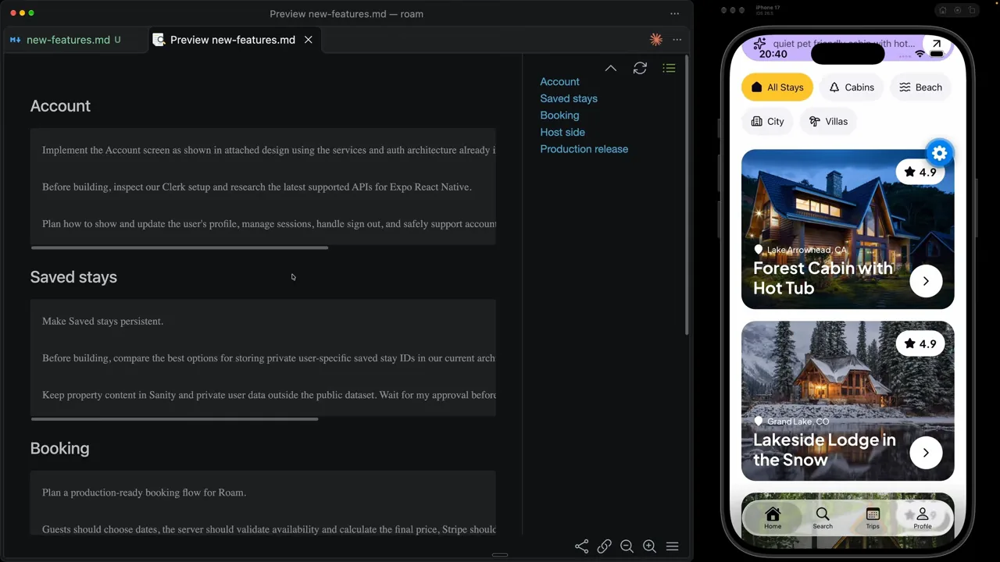
발표자가 정리하는 반복 가능한 방식은 이래요.
- 문제에서 시작해요 — 어떤 기능인지보다 무엇을 풀려는지부터요.
- 이미 있는 것을 AI에게 살피게 해요 —
AGENTS.md와 관련 코드부터 읽혀요. - 데이터의 주인을 정해요 — 도구마다 한 가지 일, 책임을 옮기려면 먼저 묻기.
- 선택지를 비교해요 — 추천을 그대로 받지 않고 이유와 대안을 따져요.
- 계획을 검토하고 결과를 직접 테스트해요 — 보고서를 읽고, 보고서가 사람에게 넘긴 항목을 눌러 봐요.
마무리에서 발표자는 이 강의가 AI에게 다 맡기는 법이 아니라, 에이전트에게 맥락을 주고, 코딩 전에 계획하게 하고, 도구마다 한 가지 분명한 일을 맡기는 법을 가르쳤다고 정리해요.